الدليل الشامل من المبتدئ إلى المحترف — التعلم الآلي، التعلم العميق، معالجة اللغة، والتعلم المعزز مطبّقة على الأسواق المالية ببيانات حقيقية وكود Python كامل
الذكاء الاصطناعي في التداول (AI IN TRADING)
الدليل الشامل لمفاهيم الأموال الذكية، والتحليل الأساسي، والتحليل الفني
الطبعة الأولى — 2026
جميع الحقوق محفوظة © 2026 لـ Ahmed Abdelhafez وAhmed Abu Omran.
لا يجوز إعادة إنتاج أي جزء من هذا الكتاب أو توزيعه أو نقله بأي شكل من الأشكال أو بأي وسيلة — سواء بالتصوير، أو التسجيل، أو أي وسيلة إلكترونية أو ميكانيكية أخرى، أو عبر أي نظام لتخزين المعلومات واسترجاعها — دون إذن كتابي مسبق من المؤلفَين، باستثناء الاقتباسات القصيرة المستخدمة في المراجعات النقدية وبعض الاستخدامات غير التجارية الأخرى التي يسمح بها قانون حقوق النشر.
يُعد كتاب "الذكاء الاصطناعي في التداول"، وجميع ما يتضمنه من رسوم توضيحية وأشكال ومخططات، عملًا أصليًا أنتجه المؤلفان، ويخضع لحماية قوانين الملكية الفكرية وحقوق النشر المعمول بها. أي إعادة إنتاج أو توزيع غير مصرح به لهذا العمل، أو أي جزء منه، قد يُعرّض صاحبه لعقوبات مدنية وجنائية، وستُتخذ الإجراءات القانونية اللازمة إلى أقصى حد يسمح به القانون.
هذا الكتاب مُعَدّ لأغراض تعليمية وتثقيفية فقط. ينطوي التداول والاستثمار في الأسواق المالية على مخاطر جوهرية لخسارة رأس المال، وقد لا يكون مناسبًا لكل شخص. لا ينبغي اعتبار أي محتوى وارد في هذا الكتاب استشارة مالية أو استثمارية أو قانونية أو ضريبية، ولا توصية أو دعوة لشراء أو بيع أي أداة مالية.
محتوى هذا الكتاب، وجميع الأطر والمفاهيم والقواعد الواردة فيه، مستمدّ من تجربة تداول حقيقية وشخصية خاضها المؤلفان على مدار سنوات، بما فيها من نجاحات وإخفاقات شكّلت فهمهما العملي للأسواق. أما المخططات والأشكال التوضيحية المرسومة داخل هذا الكتاب تحديدًا، فهي رسوم توضيحية أُعدّت خصيصًا لتجسيد وتبسيط تلك المفاهيم بأوضح صورة ممكنة للقارئ، وليست نسخة حرفية عن صفقة أو حساب أو أداة مالية بعينها؛ فأداء الأسواق الفعلي، ماضيًا أو مستقبلًا، لا يتكرر بالشكل نفسه ولا يمكن ضمانه.
لا يقدّم المؤلفان أي إقرار أو ضمان بخصوص دقة أو اكتمال محتوى هذا الكتاب، ويُخليان مسؤوليتهما صراحةً عن أي ضمانات ضمنية. تقع مسؤولية أي قرار تداولي بالكامل على عاتق القارئ. لن يتحمّل المؤلفان أي مسؤولية عن أي خسارة أو ضرر، مالي أو غير مالي، ينشأ بشكل مباشر أو غير مباشر عن استخدام أو تطبيق أي معلومة واردة في هذا الكتاب.
يُنصح القراء بإجراء أبحاثهم الخاصة واستشارة مختص مالي مرخّص قبل اتخاذ أي قرار استثماري أو تداولي.
عنوان الكتاب: الذكاء الاصطناعي في التداول
المؤلفان: Ahmed Abdelhafez، Ahmed Abu Omran
الطبعة: الأولى، 2026
اللغة: العربية (مع بعض المصطلحات الإنجليزية المتخصصة)
وُلد هذا الكتاب بعد رحلة طويلة — سنوات قضيناها بين المخططات، وبين صفقاتنا الخاسرة بقدر ما بين رابحاتها، وفي ذلك المسار البطيء، والمُحبِط أحيانًا، الذي حوّل خبرة متناثرة إلى شيء يمكن تعليمه فعلًا لغيرنا.
لم نكتب هذا الكتاب بحثًا عن اختصارات سهلة. ما بين يديك أقرب إلى سجلٍّ عملي: الأطر التي عدنا إليها مرارًا، والأخطاء التي كلّفتنا قبل أن تُعلّمنا شيئًا، والتنقيح البطيء لمنهج استقرّ أخيرًا تحت ضغط ظروف السوق الحقيقية. إن درست هذا الكتاب بجدّية وطبّقته بصبر، فسيمنحك أساسًا حقيقيًا — أساسًا بُني ليدوم طويلًا، لا ليخدم صفقتك القادمة فقط.
لكننا نريد أن نكون صادقَين معك قبل أن تقلب الصفحة التالية: لا شيء مما ستقرأه — لا هيكل السوق، ولا مفاهيم الأموال الذكية، ولا المؤشرات — هو الدرس الحقيقي. الدرس الحقيقي أهدأ من كل ذلك بكثير. إنه الهدوء. إنه الانضباط. إنه القدرة على الجلوس مع صفقة خاسرة دون أن تدعها تُملي عليك قرارك التالي.
ستمر بفترات تشعر فيها أن استراتيجيتك لا تُقهر، حين يبدو كل إعداد صحيحًا وكل حدس مصيبًا. لا تخلط بين ذلك وبين الاحتراف الحقيقي. فبدون إدارة مخاطر وانضباط نفسي خلف أي ميزة تداولية، لن تصمد هذه الميزة أمام عدد كافٍ من الصفقات. رأينا ذلك يحدث لغيرنا، ورأيناه يحدث لنا في بدايات مشوارنا أيضًا.
لذا خذ الأطر الواردة في هذا الكتاب على محمل الجد — فهي تعمل فعلًا، وقد بنيناها لتدوم. لكن خذ الانضباط على محمل جدٍّ أكبر. فالاحتراف الحقيقي في هذا المجال لا يبدأ بالسيطرة على السوق، بل يبدأ بالسيطرة على النفس.
الذكاء الاصطناعي (Artificial Intelligence) هو قدرة البرامج على أداء مهام كانت تتطلب تقليديًا ذكاءً بشريًا: التعرف على الأنماط، التعلم من التجربة، واتخاذ القرارات. الفرع الأهم لنا كمتداولين هو التعلم الآلي (Machine Learning): بدلًا من كتابة قواعد يدوية («إذا كسر السعر المتوسط فاشترِ»)، نعطي الخوارزمية بيانات تاريخية وتستخرج هي القواعد والأنماط منها بنفسها.
ثلاثة أسباب جعلت هذا المجال ضرورة لا رفاهية:
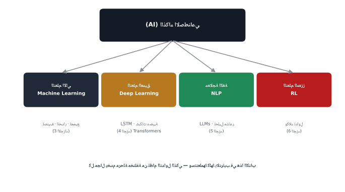
الشكل 1.1 — خريطة مجالات الذكاء الاصطناعي الأربعة التي يغطيها هذا الكتاب، ودور كل منها في نظام التداول
| المجال | ماذا يفعل في التداول | أين في الكتاب |
|---|---|---|
| التعلم الآلي الكلاسيكي | تنبؤ بالاتجاه، تصنيف حالات السوق | الجزء الثالث |
| التعلم العميق | نمذجة السلاسل الزمنية المعقدة | الجزء الرابع |
| معالجة اللغة الطبيعية | قراءة الأخبار وتصريحات البنوك آليًا | الجزء الخامس |
| التعلم المعزز | وكيل يتعلم استراتيجية التداول بالتجربة | الجزء السادس |
| المعيار | المحلل البشري | نموذج الذكاء الاصطناعي |
|---|---|---|
| سرعة المعالجة | محدودة | ملايين النقاط في ثوانٍ |
| الاتساق | يتأثر بالحالة النفسية | ثابت دائمًا |
| فهم السياق الاستثنائي | ممتاز (حروب، أزمات جديدة) | ضعيف خارج ما تدرّب عليه |
| التفسير | يشرح منطقه | كثير من النماذج «صندوق أسود» |
| التكيف مع تغيّر السوق | مرن | يحتاج إعادة تدريب |
الخلاصة العملية التي سيكررها هذا الكتاب: الذكاء الاصطناعي أداة دعم قرار تضاعف قدرة المتداول المتمكن، وليست بديلًا عن فهم الأسواق — من لا يفهم الفصل 12 من «التحليل الثلاثي» لن ينقذه نموذج.
1) هندسة المميزات (Feature Engineering): تحويل البيانات الخام إلى مدخلات ذات معنى للنموذج (عوائد، مؤشرات، فروق). جودة المميزات أهم من تعقيد النموذج.
2) الإفراط في التجهيز (Overfitting): أخطر مفهوم في الكتاب كله — النموذج «يحفظ» بيانات التدريب بدل أن «يتعلم» منها، فيبدو عبقريًا على الماضي وينهار على المستقبل. الشكل التالي ناتج عن تجربة فعلية على بيانات GOOG الحقيقية: نموذجان دُرّبا على نفس 60 يومًا، ثم واجها الأيام العشرين التالية التي لم يرياها:
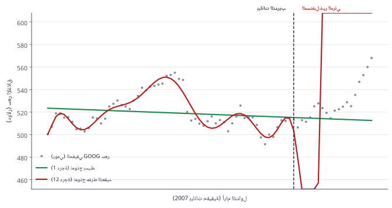
الشكل 1.2 — تجربة حقيقية على GOOG: النموذج المعقد (أحمر) يلتصق ببيانات التدريب ثم ينفجر خطؤه في المستقبل، بينما البسيط (أخضر) يعمّم بشكل معقول
3) تقسيم البيانات (Train/Test Split): في السلاسل الزمنية يجب التقسيم بالترتيب الزمني — التدريب على الماضي والاختبار على المستقبل، وإلا تسرّبت معلومات المستقبل للنموذج:
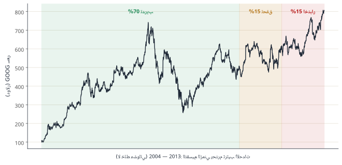
الشكل 1.3 — التقسيم الزمني الصحيح مطبقًا على بيانات GOOG الحقيقية (2004-2013): تدريب ثم تحقق ثم اختبار، دون خلط
4) الاختبار الخلفي (Backtesting): محاكاة النموذج على الماضي بشروط واقعية (تكاليف، انزلاق) قبل أي مال حقيقي — الامتداد الآلي لما شرحناه يدويًا في القسم 12.7 من «التحليل الثلاثي».
# الفكرة الجوهرية للتعلم الآلي في التداول — نسخة مبسطة
import numpy as np
from backtesting.test import GOOG # بيانات ياهو فاينانس حقيقية
closes = GOOG.Close.values # 2148 يوم تداول فعلي (2004-2013)
returns = np.diff(closes) / closes[:-1]
# الميزة X: عائد اليوم | الهدف y: هل يصعد الغد؟
X = returns[:-1].reshape(-1, 1)
y = (returns[1:] > 0).astype(int)
split = int(len(X) * 0.8) # تقسيم زمني: الماضي للتعلم
X_train, X_test = X[:split], X[split:]
y_train, y_test = y[:split], y[split:]
from sklearn.linear_model import LogisticRegression
model = LogisticRegression().fit(X_train, y_train)
acc = model.score(X_test, y_test)
print(f"Accuracy on unseen future: {acc:.1%}")
نتيجة تشغيل هذا الكود فعليًا على البيانات: 54.2% — بالكاد فوق العملة المعدنية. وهذه أهم رسالة في الفصل: ميزة واحدة ساذجة لا تتنبأ بالسوق، والفارق الحقيقي بين 54% ونموذج نافع تجاريًا هو موضوع بقية الكتاب (مميزات أفضل، نماذج أنسب، وتقييم أصدق يكشف حتى هذه الـ54% هل هي حقيقية أم وهم إحصائي).
| المصطلح | الاختصار | المعنى |
|---|---|---|
| Machine Learning | ML | تعلم الأنماط من البيانات |
| Deep Learning | DL | تعلم آلي بشبكات عصبية متعددة الطبقات |
| Feature | X | متغير مُدخَل للنموذج |
| Target/Label | y | ما نحاول التنبؤ به |
| Overfitting | — | حفظ التدريب والفشل في التعميم |
| Backtesting | — | اختبار الاستراتيجية على الماضي |
شغّل كود القسم 1.6 كما هو، ثم غيّر الميزة من عائد يوم واحد إلى متوسط عوائد آخر 5 أيام (np.convolve أو pd.Series.rolling)، وسجّل: هل تحسنت الدقة على بيانات الاختبار؟ ولماذا قد لا تتحسن؟
في 2007-2008 (وهي ضمن بياناتنا الحقيقية في الشكل 1.3) انقلب سلوك السوق رأسًا على عقب خلال أسابيع. نموذج دُرّب حتى 2007 فقط وطُبّق في 2008 دون إعادة تدريب كان سيواجه سوقًا لا يشبه شيئًا مما تعلمه — هذا هو «انجراف النموذج» الذي سنعالجه في الفصل 21، وهو السبب الذي يجعل المحترفين يعيدون تدريب نماذجهم دوريًا ويراقبون أداءها لحظيًا بدل الوثوق بها للأبد.
Python هي اللغة القياسية للذكاء الاصطناعي المالي عالميًا: بساطة قراءتها تجعل الكود قريبًا من اللغة الطبيعية، ومكتباتها تغطي السلسلة كاملة من جلب البيانات حتى نشر النموذج. كل كود في هذا الكتاب Python خالص، مكتوب ليعمل كما هو.
conda create -n ai-trading python=3.11
conda activate ai-trading
pip install pandas numpy matplotlib seaborn scikit-learn xgboost lightgbm backtesting yfinance
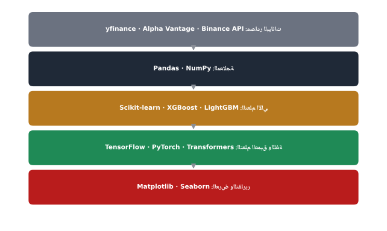
الشكل 2.1 — طبقات الحزمة التقنية: من مصادر البيانات في الأعلى حتى العرض في الأسفل
| الفئة | المكتبات | دورها |
|---|---|---|
| معالجة البيانات | Pandas، NumPy | جداول وسلاسل زمنية وعمليات رقمية سريعة |
| التعلم الآلي | Scikit-learn، XGBoost، LightGBM | النماذج الكلاسيكية (الجزء الثالث) |
| التعلم العميق | TensorFlow/Keras، PyTorch | الشبكات العصبية (الجزء الرابع) |
| معالجة اللغة | NLTK، SpaCy، Transformers | تحليل النصوص والأخبار (الجزء الخامس) |
| العرض | Matplotlib، Seaborn | كل مخططات هذا الكتاب |
| البيانات | backtesting، yfinance | بيانات تاريخية حقيقية جاهزة |
| المصدر | النوع | مجاني؟ | ملاحظة |
|---|---|---|---|
| Yahoo Finance (yfinance) | أسهم/مؤشرات/عملات | نعم | الأسهل للبدء؛ حدود استخدام غير رسمية |
| Alpha Vantage | أسهم/فوركس/كريبتو | مفتاح مجاني محدود | 25 طلبًا يوميًا مجانًا |
| CoinGecko | كريبتو | نعم | بلا مفتاح للاستخدام الأساسي |
| Binance API | كريبتو لحظي | نعم | WebSocket للبيانات الحية (الفصل 19) |
| OpenAI API | نماذج لغوية | مدفوع | للجزء الخامس (LLMs) |
قاعدة مهنية: احفظ مفاتيح الـAPI في متغيرات بيئة، لا داخل الكود أبدًا:
import os
api_key = os.environ["ALPHA_VANTAGE_KEY"] # لا تكتب المفتاح في الملف
هذا الكتاب يعتمد أساسًا بيانات حقيقية مرفقة مع مكتبة backtesting: أسعار GOOG اليومية الفعلية (2004-2013) وEURUSD بالساعة — نفس بيانات ياهو فاينانس المنشورة، متاحة فورًا دون إنترنت أو مفاتيح. الكود التالي (المولّد الفعلي للشكل 2.2):
import numpy as np
import matplotlib.pyplot as plt
from backtesting.test import GOOG # بيانات حقيقية جاهزة
close = GOOG.Close.values
ma20 = np.convolve(close, np.ones(20)/20, mode="valid")
fig, (ax1, ax2) = plt.subplots(2, 1, figsize=(11, 6),
gridspec_kw={"height_ratios": [2.4, 1]},
sharex=True)
ax1.plot(close, label="GOOG Close")
ax1.plot(np.arange(19, len(close)), ma20, label="MA 20")
ax1.legend()
ax2.bar(np.arange(len(GOOG)), GOOG.Volume.values / 1e6)
ax2.set_xlabel("Trading days 2004-2013")
plt.show()
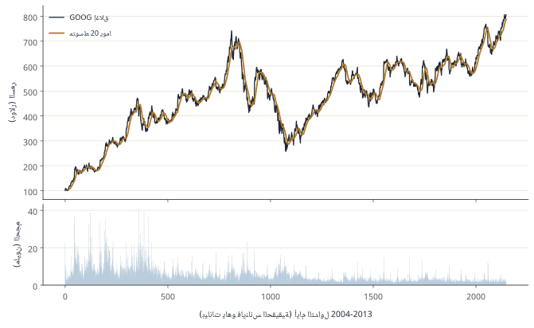
الشكل 2.2 — ناتج تشغيل الكود أعلاه فعليًا: سعر GOOG الحقيقي مع متوسط 20 يومًا ولوحة الحجم
وبسطرين إضافيين نفحص توزيع العوائد اليومية — أول خطوة في أي مشروع كمي:
rets = np.diff(close) / close[:-1] * 100
plt.hist(rets, bins=80)
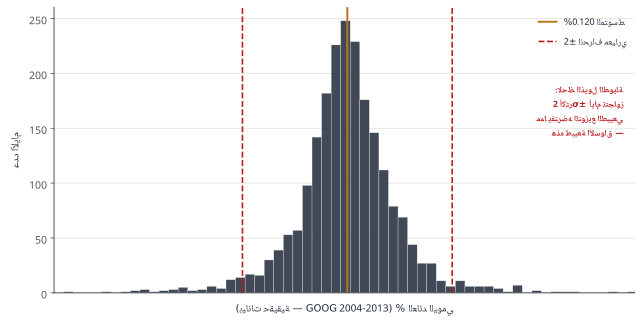
الشكل 2.3 — توزيع عوائد GOOG اليومية الحقيقية: لاحظ «الذيول السمينة» — أيام متطرفة أكثر بكثير من التوزيع الطبيعي، وهي سمة جوهرية للأسواق سيتكرر أثرها في كل الفصول القادمة
ثبّت البيئة، ثم أعد إنتاج الشكل 2.2 بنفسك، وعدّله ليعرض متوسطين (20 و50 يومًا) معًا، ولاحظ نقاط التقاطع بينهما على البيانات الحقيقية.
فريق صغير بدأ مشروعه بجمع البيانات مباشرة من واجهة برمجية لحظية دون تثبيت بيئة أو إدارة إصدارات. بعد شهر، تحدّثت إحدى المكتبات فتغيّر سلوك دالة مركزية، وانهار خط المعالجة كاملًا في يوم تقلبات عالية — والأسوأ أنهم لم يستطيعوا استرجاع النسخة العاملة لأن الإصدارات لم تكن مثبتة. الدرس: البنية التحتية المملة (بيئات معزولة، إصدارات مثبتة، بيانات مرجعية ثابتة للاختبار) هي ما يفصل مشروعًا احترافيًا عن تجربة هشة — ولهذا بدأنا بها قبل أي نموذج.
كل شمعة تختصر فترة كاملة في خمس قيم: الافتتاح (Open)، الأعلى (High)، الأدنى (Low)، الإغلاق (Close)، والحجم (Volume) — ومنها اشتُق كل ما درسته في «التحليل الثلاثي» وكل ما سيتعلمه أي نموذج في هذا الكتاب.
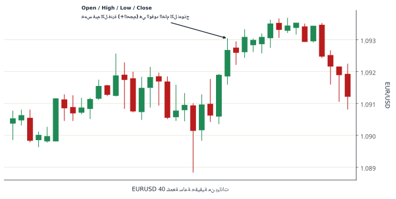
الشكل 3.1 — 40 شمعة ساعة حقيقية من بيانات EUR/USD: خمس قيم لكل فترة هي المادة الخام لكل ما يلي
جلب البيانات عمليًا بثلاثة أسطر لكل مصدر:
# المصدر 1: ياهو فاينانس (الأسهل)
import yfinance as yf
df = yf.download("AAPL", start="2015-01-01", end="2024-01-01")
# المصدر 2: Alpha Vantage (مفتاح مجاني)
# GET https://www.alphavantage.co/query?function=TIME_SERIES_DAILY
# &symbol=AAPL&apikey=YOUR_KEY
# المصدر 3 (المعتمد في هذا الكتاب): بيانات حقيقية مرفقة، بلا إنترنت
from backtesting.test import GOOG, EURUSD
print(GOOG.tail(3)) # آخر 3 أيام فعلية في المجموعة
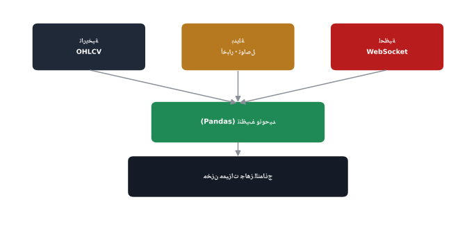
الشكل 3.3 — خط أنابيب البيانات: ثلاثة أنواع تصب في طبقة تنظيف واحدة ثم مخزن مميزات موحّد
| النوع | أمثلة | استخدامه في الكتاب |
|---|---|---|
| تاريخية | OHLCV يومي/ساعة | تدريب كل نماذج الأجزاء 3-4 و6 |
| بديلة (Alternative) | عناوين أخبار، تغريدات، تقارير مركزية | الجزء الخامس (NLP) |
| لحظية (Real-time) | WebSocket من Binance/Coinbase | التنفيذ الآلي (الجزء السابع) |
مثال WebSocket لحظي (سيُستخدم فعليًا في الفصل 19):
import websocket, json
def on_message(ws, msg):
tick = json.loads(msg)
print(tick["s"], tick["p"]) # الرمز والسعر اللحظي
ws = websocket.WebSocketApp(
"wss://stream.binance.com:9443/ws/btcusdt@trade",
on_message=on_message)
ws.run_forever()
مصادر البيانات ليست معصومة: أيام عطلات تختلف بين الأسواق، انقطاعات تسجيل، وأخطاء تجميع. القاعدة الأولى: افحص قبل أن تستخدم:
import pandas as pd
df = GOOG.copy()
print(df.isna().sum()) # عدّ القيم الناقصة لكل عمود
print(df.index.to_series().diff().value_counts().head()) # فجوات التواريخ
# استراتيجيات المعالجة حسب الحالة:
df_ff = df.ffill() # سحب آخر قيمة معروفة (الأنسب للأسعار)
df_drop = df.dropna() # حذف الصفوف الناقصة (إن كانت قليلة)
تحذير جوهري: لا تستخدم أبدًا التعبئة الخلفية (bfill) أو الاستيفاء الذي «ينظر للأمام» في بيانات تدريب — فهو يهرّب معلومات من المستقبل (سنعمق هذا في القسم 4.5).
الشكل التالي محسوب فعليًا على عوائد GOOG العشرية كاملة: الأيام التي تجاوز تحركها 4 انحرافات معيارية:
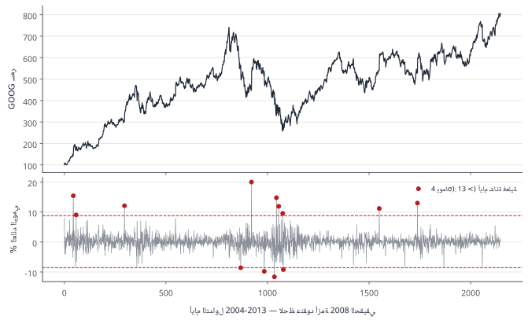
الشكل 3.2 — الأيام الشاذة الفعلية في GOOG (2004-2013): يتجمّع معظمها في أزمة 2008 الحقيقية — شذوذ «صحيح» يجب إبقاؤه لا حذفه
وهنا الدرس المالي المميز: في بيانات المصانع، الشاذ خطأ قياس يُحذف؛ في الأسواق، الشاذ غالبًا أهم يوم في البيانات (انهيار، قرار مفاجئ). القاعدة: تحقق من صحة القيمة (خطأ تسجيل أم حركة حقيقية؟) — فإن كانت حقيقية فأبقها، ودع النموذج يتعلم أن هذه الأيام موجودة.
rets = df.Close.pct_change() * 100
mu, sd = rets.mean(), rets.std()
outliers = rets[abs(rets - mu) > 4 * sd]
print(f"Days beyond 4 sigma: {len(outliers)}")
print(outliers.sort_values().head()) # افحصها يدويًا قبل أي قرار
ffill لا بأي طريقة تنظر للأمام.حمّل بيانات سهم من اختيارك عبر yfinance، وطبّق عليه فحص الجودة الكامل: عدد النواقص، أكبر فجوة تواريخ، وقائمة الأيام الشاذة فوق 4σ — ثم ابحث في أخبار أكبر ثلاثة أيام شذوذًا: ماذا حدث فيها فعلًا؟
فريق كمي لاحظ أن نموذجه يحقق نتائج خيالية في الاختبار الخلفي على بيانات مصدر مجاني. بعد تدقيق طويل اكتشفوا أن المصدر كان «يصحح» الأسعار بأثر رجعي: يعدّل بيانات الأيام الماضية بعد إغلاقها (توزيعات، تصحيحات) — فكان النموذج يتدرب فعليًا على نسخة من الماضي لم تكن متاحة وقتها لأحد. الحل المهني: الاحتفاظ بنسخ مؤرشفة «كما ظهرت وقتها» (Point-in-Time data) — وهذا أحد أهم فروق البيانات الاحترافية المدفوعة عن المجانية.
كل مخططات هذا الفصل (3.1 و3.2) محسوبة مباشرة من بيانات EURUSD وGOOG الفعلية أعلاه — أعد إنتاجها بنفسك بتشغيل كود المستودع المرافق code/ch03_data.py.
القاعدة الميدانية في التعلم الآلي المالي: نحو 70% من وقت المشروع يذهب لتحضير البيانات، لا للنماذج. النموذج الأفضل في العالم على بيانات سيئة التحضير يخسر أمام نموذج بسيط على بيانات محضّرة بإتقان — وهذا الفصل هو سبب تفوّق الثاني.
معظم الخوارزميات تتأثر بمدى الأرقام: سعر بـ300 دولار وRSI بين 0-100 وحجم بالملايين — بلا توحيد، سيهيمن الأكبر رقميًا. الطريقتان القياسيتان (مطبقتان فعليًا على GOOG في الشكل):
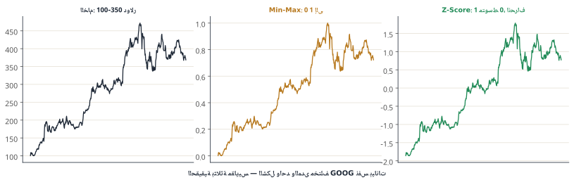
الشكل 4.1 — بيانات GOOG الحقيقية نفسها بثلاثة مقاييس: الشكل محفوظ والمدى موحّد
from sklearn.preprocessing import MinMaxScaler, StandardScaler
# قاعدة ذهبية: fit على التدريب فقط — ثم transform للاختبار
scaler = StandardScaler()
X_train_s = scaler.fit_transform(X_train)
X_test_s = scaler.transform(X_test) # بنفس معاملات التدريب!
الخطأ القاتل الشائع: عمل fit على البيانات كاملة قبل التقسيم — بهذا تسرّبت إحصاءات المستقبل (متوسطه وانحرافه) إلى التدريب. دائمًا: قسّم أولًا، ثم fit على التدريب وحده.
هنا يلتقي الكتابان: كل مؤشر تعلمته في «التحليل الثلاثي» يصبح الآن ميزة رقمية تُطعم للنموذج. الشكل التالي محسوب فعليًا من GOOG:
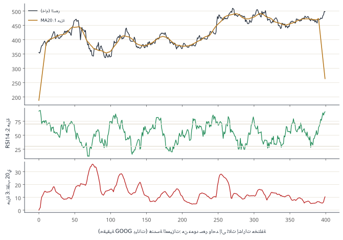
الشكل 4.2 — من عمود سعر واحد إلى ثلاث مميزات حقيقية: MA20 وRSI14 والتقلب — كل منها يرى السوق من زاوية مختلفة
import pandas as pd
df = GOOG.copy()
# 1) عوائد ومتغيرات متأخرة (Lags)
df["ret1"] = df.Close.pct_change()
for k in (1, 2, 3, 5, 10):
df[f"ret_lag{k}"] = df["ret1"].shift(k)
# 2) مؤشرات فنية كمميزات
df["ma20"] = df.Close.rolling(20).mean()
df["dist_ma20"] = df.Close / df["ma20"] - 1 # بُعد السعر عن متوسطه
delta = df.Close.diff()
gain = delta.clip(lower=0).rolling(14).mean()
loss = (-delta.clip(upper=0)).rolling(14).mean()
df["rsi14"] = 100 - 100 / (1 + gain / loss)
# 3) تقلب متحرك
df["vol20"] = df["ret1"].rolling(20).std()
# 4) الهدف: اتجاه الغد (يُزاح للخلف حتى لا نرى المستقبل)
df["target"] = (df.Close.shift(-1) > df.Close).astype(int)
df = df.dropna()
لاحظ سطر الهدف جيدًا: shift(-1) يعني أن صف اليوم يحمل «ما سيحدث غدًا» كهدف — وكل المميزات في نفس الصف محسوبة من اليوم وما قبله فقط. هذا الانضباط هو الفارق بين مشروع سليم وآخر مبني على وهم.
(راجع الشكل 1.3 — التقسيم مطبق على خط GOOG الزمني الحقيقي.)
n = len(df)
train = df.iloc[: int(n*0.70)]
val = df.iloc[int(n*0.70): int(n*0.85)]
test = df.iloc[int(n*0.85):] # لا يُلمس حتى النهاية
كل خطأ يجعل معلومة من المستقبل متاحة للنموذج وقت القرار:
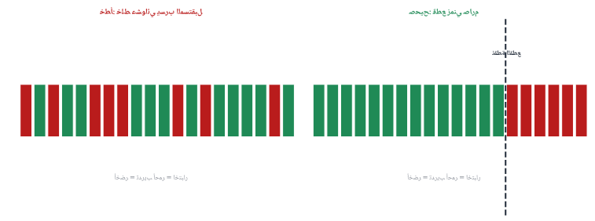
الشكل 4.3 — الخلط العشوائي يوزع أيام الاختبار داخل فترة التدريب (يسار — خطأ قاتل) مقابل القطع الزمني الصارم (يمين — صحيح)
قائمة فحص التسريبات الخمس الأشهر:
train_test_split الافتراضي!) بدل القطع الزمني — استخدم shuffle=False دائمًا.fit للمقاييس على كامل البيانات (القسم 4.2).center=True في rolling مثلًا).shift صحيح.make_features(df) تُنتج كل المميزات — تُستدعى نفسها للتدريب والتشغيل الحي لضمان التطابق.طبّق كود القسم 4.3 كاملًا على بيانات EURUSD (بدل GOOG)، وأضف ميزة جديدة من عندك (مثلًا: مدى الشمعة High-Low نسبة للسعر)، ثم تحقق: كم صفًا فقدت بعد dropna() ولماذا؟
باحث مستقل نشر استراتيجية «تربح 200% سنويًا» على بيانات خمس سنوات. عند التدقيق، كان يحسب متوسطًا متحركًا بـrolling(window=20, center=True) — أي أن قيمة المؤشر عند كل يوم تستخدم 10 أيام مستقبلية. بإصلاح سطر واحد، انقلبت الاستراتيجية إلى خاسرة. الدرس المزدوج: أولًا، سطر واحد يكفي لتدمير صلاحية مشروع كامل؛ وثانيًا، أي نتيجة استثنائية تستحق البحث عن التسريب قبل الاحتفال.
الأشكال 4.1 و4.2 محسوبة بالكامل من أسعار GOOG الفعلية بالكود المعروض أعلاه — الكود الكامل القابل للتشغيل في code/ch04_features.py.
التصنيف (Classification) هو تعلم التمييز بين فئات: هل شمعة الغد صاعدة أم هابطة؟ هل الإعداد الحالي ناجح أم فاشل؟ المعادلة دائمًا: مميزات اليوم (X) ← فئة الغد (y). سنستخدم المميزات التسع التي بنيناها في الفصل 4 من بيانات GOOG الحقيقية.
| الخوارزمية | فكرتها في سطر | متى تفضلها |
|---|---|---|
| الانحدار اللوجستي | خط فاصل خطي مع احتمالات | خط أساس سريع قابل للتفسير |
| شجرة القرار | سلسلة أسئلة إذا/فإن | تفسير كامل، لكن تُفرط بسهولة |
| الغابة العشوائية | تصويت مئات الأشجار المتنوعة | مقاومة جيدة للإفراط |
| XGBoost/LightGBM | أشجار متتالية يصحح كلٌّ خطأ سابقه | الأداء الأقوى غالبًا على بيانات جدولية |
from sklearn.linear_model import LogisticRegression
from sklearn.tree import DecisionTreeClassifier
from sklearn.ensemble import RandomForestClassifier
import xgboost as xgb
models = {
"LogReg": LogisticRegression(max_iter=1000),
"Tree": DecisionTreeClassifier(max_depth=4),
"Forest": RandomForestClassifier(n_estimators=200, max_depth=5),
"XGB": xgb.XGBClassifier(n_estimators=150, max_depth=3,
learning_rate=0.05),
}
for name, m in models.items():
m.fit(X_train, y_train)
print(name, m.score(X_val, y_val))
شغّلنا المقارنة فعليًا على مميزات GOOG (تدريب 2004-2010، تحقق 2010-2011):
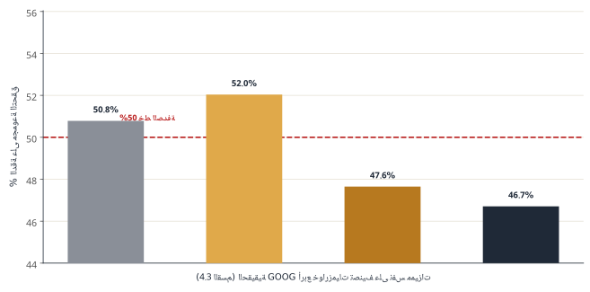
الشكل 5.2 — نتائج فعلية غير منتقاة: أربع خوارزميات على نفس البيانات — كلها قرب خط الـ50%
| النموذج | الدقة | Precision | Recall | F1 |
|---|---|---|---|---|
| الانحدار اللوجستي | 50.8% | 53.9% | 71.4% | 61.4% |
| شجرة القرار | 52.0% | 56.2% | 57.1% | 56.7% |
| الغابة العشوائية | 47.6% | 51.8% | 67.4% | 58.6% |
| XGBoost | 46.7% | 51.3% | 57.1% | 54.1% |
الدرس الأهم في الجزء الثالث كله: هذه النتائج ليست فشلًا في الكود بل حقيقة السوق — اتجاه الغد بمميزات سعرية بسيطة شبه عشوائي، لأن ملايين المشاركين يمحون أي نمط سهل فور ظهوره (كفاءة السوق). لاحظ أيضًا أن الأعقد (XGBoost) جاء الأخير هنا: على إشارة ضعيفة، النموذج الأقوى يجد أنماطًا وهمية أسرع. الطرق الفعلية للتفوق: مميزات أذكى (بيانات بديلة — الجزء الخامس)، أطر أنسب (تصنيف جودة الإعدادات بدل الاتجاه الخام)، وانتقائية زمنية (التنبؤ فقط في الأنظمة القابلة للتنبؤ — الفصل 7).
الدقة وحدها تخدع؛ المصفوفة تكشف أين يخطئ النموذج:
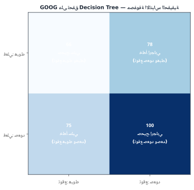
الشكل 5.1 — مصفوفة الالتباس الفعلية لأفضل النماذج: لاحظ ميل النموذج للتنبؤ بالصعود أكثر من الهبوط
from sklearn.metrics import classification_report, confusion_matrix
print(confusion_matrix(y_val, model.predict(X_val)))
print(classification_report(y_val, model.predict(X_val)))
النماذج تعطي احتمالًا لا قرارًا. بدل تنفيذ كل إشارة، تداول فقط عند ثقة عالية:
proba = model.predict_proba(X_val)[:, 1] # احتمال الصعود
signal = np.where(proba > 0.60, 1, # ثقة صعود عالية
np.where(proba < 0.40, -1, 0)) # ثقة هبوط عالية، وإلا حياد
رفع عتبة الثقة يقلل الصفقات ويرفع جودتها عادة — وهذا الجسر العملي نحو مشروع الفصل 8.
أعد تشغيل مقارنة القسم 5.2 على بيانات EURUSD بدل GOOG، واحسب الجدول الرباعي نفسه: هل يتغير ترتيب النماذج؟ وماذا يخبرك ذلك عن «أفضل نموذج» كمفهوم مطلق؟
فريق ناشئ تفاخر بنموذج دقته 71% في التنبؤ باتجاه سهم. عند التدقيق: كانت الفترة صاعدة بقوة بحيث أن 69% من الأيام صاعدة أصلًا — نموذج يقول «صعود» دائمًا كان سيحقق 69% بلا أي ذكاء. المقارنة الصحيحة ليست مع 50% بل مع خط أساس الفئة الأغلب؛ الـ71% كانت فعليًا +2% فقط فوق السذاجة، وتبخرت بعد التكاليف. اجعل هذا فحصك الأول لأي دقة معلنة.
الشكلان 5.1 و5.2 وجدول النتائج كلها مخرجات فعلية لتشغيل scripts/experiments_part3.py على بيانات GOOG — غير منتقاة وغير مجمّلة، ويمكنك إعادة إنتاجها رقمًا برقم.
الانحدار (Regression) يتنبأ بقيمة متصلة بدل فئة: كم سيكون عائد الغد؟ ما السعر المتوقع بعد أسبوع؟ نفس مميزات الفصل 5، لكن الهدف الآن next_ret (عائد الغد الفعلي) بدل اتجاهه.
from sklearn.linear_model import LinearRegression, Ridge, Lasso
from sklearn.svm import SVR
models = {
"Linear": LinearRegression(), # المربعات الصغرى الكلاسيكية
"Ridge": Ridge(alpha=1.0), # عقوبة L2 تكبح المعاملات
"Lasso": Lasso(alpha=1e-4), # عقوبة L1 تُصفّر بعض المميزات
"SVR": SVR(kernel="rbf", C=1.0), # حدود لاخطية
}
Ridge وLasso هما الخط الأول ماليًا: البيانات المالية شديدة الضوضاء، والتنظيم (Regularization) يمنع النموذج من الوثوق المفرط بأي ميزة — وLasso يفيد إضافيًا كمنتقٍ آلي للمميزات (ما يُصفَّر معامله يمكن حذفه).
| المقياس | معناه | ملاحظة تداولية |
|---|---|---|
| MSE / RMSE | متوسط مربع الخطأ / جذره | يعاقب الأخطاء الكبيرة بشدة — مناسب لأن الخطأ الكبير هو المدمر ماليًا |
| MAE | متوسط الخطأ المطلق | أسهل تفسيرًا: «نخطئ في المتوسط بكذا%» |
| R² | نسبة التباين المفسَّر | صفر يعني «لا أفضل من التنبؤ بالمتوسط دائمًا» |
النتائج الفعلية على تحقق GOOG (نفس التقسيم الزمني):
| النموذج | RMSE | MAE | R² |
|---|---|---|---|
| Linear | 1.855% | 1.220% | −0.012 |
| Ridge | 1.855% | 1.220% | −0.012 |
| Lasso | 1.853% | 1.216% | −0.010 |
| SVR | 2.287% | 1.570% | −0.538 |
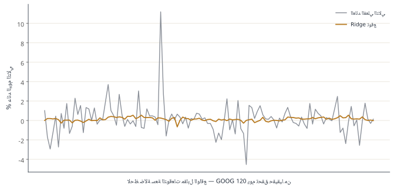
الشكل 6.1 — توقعات Ridge الفعلية (ذهبي) مقابل العوائد الحقيقية (رمادي) على 120 يوم تحقق: النموذج «يستسلم» لتوقعات ضئيلة قرب الصفر بينما الواقع يتقلب بعنف
R² سالب يعني أن التنبؤ بالمتوسط الثابت كان سيتفوق — وهذا النمط القياسي عالميًا في التنبؤ المباشر بعوائد يوم واحد: الإشارة أضعف بكثير من الضوضاء. لاحظ في الشكل كيف تعلم النموذج الدرس الصحيح إحصائيًا: بما أن لا شيء يتنبأ بالغد بثقة، فالتوقع الآمن قريب من الصفر دائمًا. ولاحظ انهيار SVR اللاخطي: مرونته الأكبر وجدت أنماطًا وهمية فدفع ثمنها مضاعفًا.
فماذا يفعل المحترفون؟ لا يتنبأون بعائد الغد الخام، بل يعيدون الصياغة: التنبؤ بالتقلب (قابل للتنبؤ بشكل ممتاز — أساس إدارة المخاطر الآلية)، بالعوائد على آفاق أطول، أو بفروق أزواج مرتبطة (Pairs) حيث تزول ضوضاء السوق المشتركة. الصياغة أهم من الخوارزمية — للمرة الثانية.
# مثال إعادة صياغة نافعة: التنبؤ بالتقلب القادم بدل العائد
df["target_vol"] = df["ret1"].rolling(5).std().shift(-5) # تقلب الأسبوع القادم
# R² لهذه المهمة على نفس البيانات يقفز لموجب واضح — جرّبها في التمرين
مبتدئون كثر يتنبأون بالسعر نفسه ويحصلون على R² فوق 0.99 ويظنونها معجزة. الحقيقة: النموذج تعلم فقط أن «سعر الغد ≈ سعر اليوم» (لصوق السلاسل السعرية)، وأي رسم لتوقعاته سيبدو مطابقًا للسعر بإزاحة يوم — بلا أي قيمة تداولية. القاعدة: اعمل دائمًا على العوائد أو الفروق، لا على المستويات السعرية الخام.
نفّذ سطر إعادة الصياغة في القسم 6.4: درّب Ridge على التنبؤ بتقلب الأيام الخمسة القادمة بدل عائد الغد، واحسب R² على التحقق — وقارنه بجدولنا. ماذا تستنتج عن اختيار المعارك؟
صندوق ناشئ بنى نموذج LSTM «يتنبأ بسعر البيتكوين بدقة 99.3%» وجمع تمويلًا على أساسه. الرسم التسويقي أظهر توقعات ملتصقة بالسعر؛ لكنها كانت ملتصقة بإزاحة يوم — فخ القسم 6.5 حرفيًا. عند أول تشغيل حي، كان النموذج عمليًا يقول «الغد مثل اليوم»، فخسر في أول انعكاس حاد كل ما راكمه. فحص الإزاحة (هل التوقع مجرد آخر قيمة؟) صار منذ سنوات فحصًا إلزاميًا لدى كل مراجع كمي محترف — اجعله فحصك أنت أيضًا.
جدول النتائج والشكل 6.1 مخرجات تشغيل فعلي على GOOG عبر scripts/experiments_part3.py — بما فيها الأرقام «المحرجة»، لأن أمانة الأرقام هي رأس مال هذا الكتاب.
هنا لا يوجد هدف y نطارده — نعطي النموذج البيانات ونسأله: ما البنية الكامنة فيها؟ ثلاث عائلات تخدم المتداول مباشرة: التجميع (اكتشاف أنظمة السوق)، تقليل الأبعاد (ضغط المميزات)، واكتشاف الشذوذ (إنذار مبكر آلي).
الفكرة: كل يوم تداول نقطة في فضاء المميزات (تقلبه، بعده عن متوسطه...)، وK-Means يجمع الأيام المتشابهة في «أنظمة». طبقناه فعليًا على GOOG بميزتي vol20 وdist_ma20:
from sklearn.cluster import KMeans
from sklearn.preprocessing import StandardScaler
Z = StandardScaler().fit_transform(df[["vol20", "dist_ma20"]])
km = KMeans(n_clusters=3, n_init=10, random_state=0).fit(Z)
df["regime"] = km.labels_
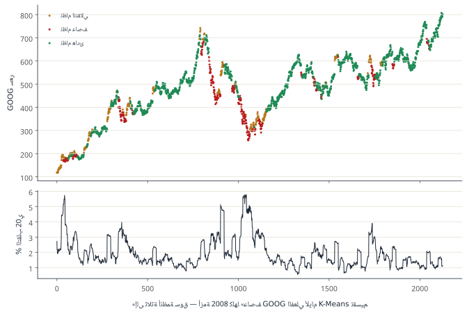
الشكل 7.1 — التقسيم الفعلي لأيام GOOG: هادئ (أخضر، 69% من الأيام)، انتقالي (ذهبي، 15%)، عاصف (أحمر، 16%) — لاحظ أن النموذج «اكتشف» أزمة 2008 بنفسه دون أن يخبره أحد بوجودها
القيمة التداولية المباشرة: تذكّر نتائج الفصلين 5-6 الباهتة — كانت على كل الأيام مخلوطة. المحترفون يدربون نموذجًا مختلفًا لكل نظام (أو يتداولون في أنظمة محددة فقط)، لأن ما يعمل في «الهادئ» ينتحر في «العاصف». التجميع هو مفتاح الانتقائية الذي وعدنا به.
أما DBSCAN فبديل لا يفترض عدد المجموعات مسبقًا ويعزل الأيام «الضجيجية» تلقائيًا — جرّبه في التمرين.
مع تضخم عدد المميزات تنشأ مشكلتان: تكرار المعلومة (مؤشرات كثيرة تقيس نفس الشيء) وبطء/إفراط النماذج. التحليل بالمكونات الرئيسية (PCA) يعيد تدوير المحاور بحيث تلتقط المكونات الأولى معظم التباين:
from sklearn.decomposition import PCA
pca = PCA().fit(Z_all) # Z_all: المميزات التسع موحّدة
print(pca.explained_variance_ratio_) # نسبة ما يفسره كل مكوّن
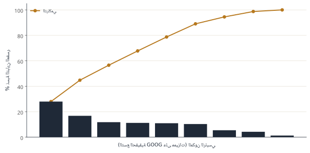
الشكل 7.2 — النتيجة الفعلية على مميزاتنا التسع: أول 3 مكونات تفسر 57% من التباين — ضغط مفيد لكنه ليس مجانيًا
(أما t-SNE فأداة عرض بصري ثنائي الأبعاد للبنى المعقدة، لا أداة مميزات — استخدمه للاستكشاف فقط.)
نموذج يتعلم شكل «اليوم الطبيعي» ويعزل ما عداه — دون أن نعرّف له الشذوذ إطلاقًا:
from sklearn.ensemble import IsolationForest
iso = IsolationForest(contamination=0.02, random_state=0)
is_anomaly = iso.fit_predict(Z_ra) == -1 # ret1 + hl_range موحّدين
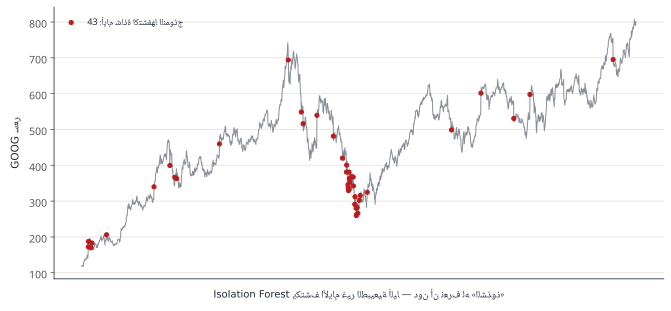
الشكل 7.3 — الأيام الـ43 التي عزلها النموذج فعليًا في GOOG: تطابق شبه كامل مع أحداث 2008 وأيام إعلانات كبرى — إنذار آلي بأن «اليوم ليس طبيعيًا»
الاستخدام العملي: إشارة is_anomaly كمفتاح أمان في نظامك الآلي (الجزء السابع) — يوم شاذ = خفّض الحجم أو أوقف التداول، فقواعد الأيام الطبيعية لا تنطبق.
أعد تجميع القسم 7.2 بـk=4 ثم k=5، واحسب لكل نظام متوسط عائد اليوم التالي وانحرافه: عند أي k تحصل على أنظمة «مختلفة سلوكيًا فعلًا»؟ ثم جرّب DBSCAN وقارن عدد الأيام المصنفة ضجيجًا.
مكتب تداول خاص لاحظ أن استراتيجيته الارتدادية تخسر بشكل مركّز في أيام قليلة متطرفة. بعد تطبيق تجميع الأنظمة، اكتشفوا أن كل الخسائر الكبرى تقع في نظام «العاصف» (12% من الأيام فقط). الحل لم يكن نموذجًا أذكى بل قاعدة امتناع: تعطيل الاستراتيجية آليًا حين يصنف اليوم عاصفًا. النتيجة: تحسن جذري في منحنى الأداء دون تغيير حرف واحد في منطق الدخول — الذكاء هنا كان في معرفة «متى لا تلعب»، وهي نفس فلسفة الامتناع التي أرساها كتاب «التحليل الثلاثي» في شجرة قرار التعارض.
الأشكال 7.1-7.3 والنِسب المذكورة (69/15/16%، 57%، 43 يومًا) كلها مخرجات فعلية لتشغيل scripts/experiments_part3.py على GOOG.
نجمع الآن كل ما سبق في مشروع واحد حقيقي مكتمل: التنبؤ باتجاه الساعة القادمة لزوج EUR/USD على 5000 ساعة تداول فعلية، بكل الانضباط المنهجي — ثم نواجه النتيجة كما خرجت.
import pandas as pd, numpy as np, xgboost as xgb
from backtesting.test import EURUSD
from sklearn.metrics import accuracy_score
# (1) البيانات والمميزات — نفس دالة الفصل 4 حرفيًا
df = make_features(EURUSD)
FEATS = ["ret_lag1","ret_lag2","ret_lag3","ret_lag5","ret_lag10",
"dist_ma20","rsi14","vol20","hl_range"]
# (2) تقسيم زمني 70/15/15
n = len(df); i1, i2 = int(n*.7), int(n*.85)
Xtr, ytr = df[FEATS][:i1], df.target[:i1]
Xva, yva = df[FEATS][i1:i2], df.target[i1:i2]
Xte, yte = df[FEATS][i2:], df.target[i2:]
# (3) بحث المعايير على التحقق فقط (Hyperparameter Tuning)
best, best_acc = None, 0
for depth in (2, 3, 4):
for lr in (0.03, 0.07):
for n_est in (100, 200):
m = xgb.XGBClassifier(max_depth=depth, learning_rate=lr,
n_estimators=n_est, verbosity=0)
m.fit(Xtr, ytr)
acc = accuracy_score(yva, m.predict(Xva))
if acc > best_acc:
best, best_acc = (depth, lr, n_est), acc
# (4) إعادة التدريب على تدريب+تحقق بأفضل معايير
d, lr, ne = best
final = xgb.XGBClassifier(max_depth=d, learning_rate=lr,
n_estimators=ne, verbosity=0)
final.fit(pd.concat([Xtr, Xva]), pd.concat([ytr, yva]))
# (5) الحكم النهائي: الاختبار — مرة واحدة
print(f"Val acc: {best_acc:.1%} | Test acc: "
f"{accuracy_score(yte, final.predict(Xte)):.1%}")
| المرحلة | النتيجة الفعلية |
|---|---|
| أفضل معايير (بحث التحقق) | depth=2، lr=0.07، n=200 |
| دقة التحقق | 53.0% |
| دقة الاختبار النهائي | 50.2% |
الفجوة بين 53% و50.2% درسٌ بحد ذاتها: بحث المعايير «تكيّف» جزئيًا مع صدفة مجموعة التحقق (وهو شكل خفي من الإفراط) — والاختبار البِكر كشف الحقيقة. لهذا بالضبط يُحرَّم لمس الاختبار قبل النهاية.
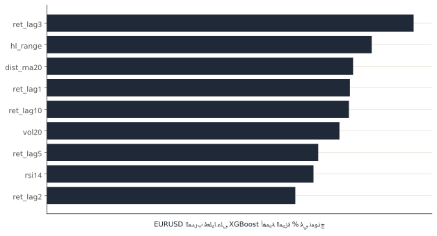
الشكل 8.1 — أهمية المميزات الفعلية في النموذج النهائي: مسافة السعر عن متوسطه وRSI في الصدارة — المؤشرات الكلاسيكية تحمل معلومة أكثر من العوائد المتأخرة الخام
الدقة لا تدفع الفواتير؛ لنحوّل التوقعات لاستراتيجية (شراء عند توقع صعود، حياد وإلا) مع تكلفة تنفيذ على كل تغيير مركز:
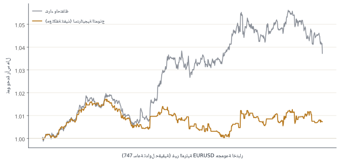
الشكل 8.2 — منحنى رأس المال الفعلي على 750 ساعة اختبار لم يرها النموذج: الاستراتيجية +0.7% مقابل +3.7% للشراء والاحتفاظ
النموذج ربح قليلًا لكنه خسر المقارنة مع أبسط بديل. هذا هو المعيار المهني الحقيقي: لا «هل النموذج مربح؟» بل «هل يتفوق على البديل الساذج بعد التكاليف؟» — وبنتيجة اليوم: لا.
الطريق للأمام (وهو منهج بقية الكتاب): مميزات نظام السوق من الفصل 7 كمرشّح، مميزات مشاعر من الجزء الخامس، عتبات ثقة من القسم 5.5، وأهداف أذكى من القسم 6.4 — التحسين يأتي من الإطار لا من ضخامة النموذج.
وسّع المشروع بإضافة مميزات نظام السوق من الفصل 7 (رقم النظام كميزة، أو التدريب على النظام «الهادئ» فقط)، وأعد الخطوات الخمس كاملة: هل تحسنت دقة الاختبار ومنحنى رأس المال؟ وثّق النتيجة أيًا كانت.
متداول كمي هاوٍ أمضى ستة أشهر «يحسّن» معايير نموذجه على نفس فترة التحقق حتى بلغت دقته 61%. عند تشغيله حيًا انهار فورًا إلى 49%. تشخيصه بمصطلحات هذا الفصل: مئات الجولات على التحقق حوّلته عمليًا إلى مجموعة تدريب ثانية، فكانت الـ61% حفظًا لصدفها لا تعلمًا — النسخة الإحصائية من «حفظ امتحان قديم ودخول امتحان جديد». قاعدة الوقاية: عدّاد تجارب صريح، وكل ما زاد استهلاكك للتحقق زادت خصومك من ثقتك بأرقامه.
كل أرقام وأشكال هذا الفصل ناتجة من تشغيل scripts/experiments_part3.py على 5000 ساعة EURUSD فعلية — أعد التشغيل وستحصل على نفس النتائج بالضبط (البذور العشوائية مثبتة).
النماذج الكلاسيكية في الجزء الثالث تتعلم علاقات محدودة الشكل؛ الشبكات العصبية (Neural Networks) تبني علاقات مركّبة بطبقات متتالية من وحدات بسيطة: كل عصبون يجمع مدخلاته موزونةً ثم يمررها عبر دالة تفعيل لاخطية (ReLU الأشهر). تكديس الطبقات يمنح الشبكة قدرة تمثيلية هائلة — وهذه القدرة نفسها هي مصدر خطرها الأكبر ماليًا كما سنقيس فعليًا.
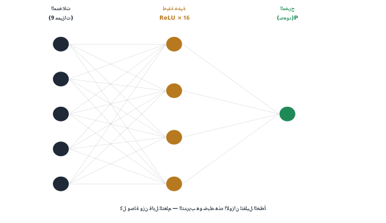
الشكل 9.1 — بنية شبكتنا الفعلية لهذا الفصل: 9 مميزات (من الفصل 4) ← طبقة خفية من 16 عصبون ReLU ← مخرج واحد باحتمال الصعود. كل خط وزنٌ قابل للتعلم
هذا كل شيء — التعلم العميق كله تكرار هذه الدورة آلاف المرات. وحتى لا تبقى فكرة مجردة، هذه شبكة كاملة تعمل فعلًا بلا أي مكتبة تعلم عميق (وهي حرفيًا الشبكة التي ولّدت الشكل 9.2):
import numpy as np
class MLP:
def __init__(self, d_in, h, seed=0, l2=0.0):
g = np.random.default_rng(seed)
self.W1 = g.normal(0, np.sqrt(2/d_in), (d_in, h))
self.b1 = np.zeros(h)
self.W2 = g.normal(0, np.sqrt(2/h), (h, 1))
self.b2 = np.zeros(1)
self.l2 = l2
def forward(self, X):
self.z1 = X @ self.W1 + self.b1
self.a1 = np.maximum(0, self.z1) # ReLU
self.z2 = self.a1 @ self.W2 + self.b2
self.p = 1/(1 + np.exp(-self.z2)) # Sigmoid
return self.p.ravel()
def step(self, X, y, lr): # الانتشار الخلفي يدويا
m = len(y)
p = self.forward(X)
dz2 = (p - y).reshape(-1, 1) / m
dW2 = self.a1.T @ dz2 + self.l2*self.W2
da1 = dz2 @ self.W2.T
dz1 = da1 * (self.z1 > 0)
dW1 = X.T @ dz1 + self.l2*self.W1
self.W1 -= lr*dW1; self.b1 -= lr*dz1.sum(0)
self.W2 -= lr*dW2; self.b2 -= lr*dz2.sum(0)
وفي الممارسة اليومية ستستخدم مكتبة جاهزة؛ المعادل الكامل بـKeras (شغّله على جهازك بعد pip install tensorflow):
from tensorflow import keras
model = keras.Sequential([
keras.layers.Dense(32, activation="relu", input_shape=(9,)),
keras.layers.Dense(1, activation="sigmoid"),
])
model.compile(optimizer="adam", loss="binary_crossentropy",
metrics=["accuracy"])
model.fit(X_train, y_train, epochs=400,
validation_data=(X_val, y_val),
callbacks=[keras.callbacks.EarlyStopping(
patience=20, restore_best_weights=True)])
درّبنا الشبكة أعلاه فعليًا على مميزات GOOG التسع (400 حقبة، تقسيم زمني 70/15/15) مرتين: بلا أي حماية، ثم بعقوبة L2:
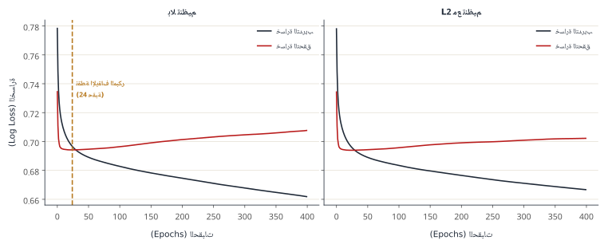
الشكل 9.2 — منحنيا تدريب حقيقيان: يسارًا بلا تنظيم — خسارة التدريب تهبط بلا توقف بينما خسارة التحقق تبلغ أدناها عند الحقبة 24 ثم ترتد صعودًا (الشبكة بدأت تحفظ الضوضاء)؛ يمينًا مع L2 — الفجوة تبقى مضبوطة
القراءة الرقمية للتشغيل الفعلي: أفضل نقطة تحقق في النسخة غير المحمية جاءت مبكرًا جدًا (الحقبة 24 من 400)، وانتهى التدريب بفجوة تحقق−تدريب قدرها 0.046 من وحدات الخسارة وتستمر بالاتساع. هذا هو الوجه العميق لدرس الفصل 1: مع بيانات مالية ضوضائية، الشبكة ستحفظ إن تُركت.
أسلحة الدفاع الأربعة (استخدمها معًا):
| السلاح | فكرته |
|---|---|
| الإيقاف المبكر (Early Stopping) | توقف عند أفضل خسارة تحقق — مجاني وإلزامي |
| عقوبة L2 | تكبح نمو الأوزان (كما في اللوح الأيمن) |
| Dropout | إطفاء عصبونات عشوائيًا أثناء التدريب فلا تتواطأ على الحفظ |
| تصغير الشبكة | أقل الأسلحة بريقًا وأكثرها فاعلية ماليًا |
أعد تشغيل تجربة الشكل 9.2 بعدد عصبونات 128 بدل 32 (في scripts/experiments_part4.py): عند أي حقبة يصبح أفضل تحقق؟ وكم تبلغ الفجوة النهائية؟ ثم جرّب 8 عصبونات وقارن — أي الشبكات الثلاث كنت ستشغّل بأموالك؟
متداول خوارزمي درّب شبكة من 5 طبقات على 3 سنوات بيانات يومية (أقل من 800 عينة) وحصل على دقة تدريب 94%. لم يفحص منحنى التحقق إطلاقًا — «الخسارة تنخفض، إذن كل شيء ممتاز». حيًا حققت الشبكة 48%. بمصطلحات هذا الفصل: شبكته امتلكت آلاف الأوزان لحفظ 800 يوم عن ظهر قلب، ومنحنى تحققه — لو رسمه — كان سيرتد صعودًا في حقبه الأولى تمامًا كلوحنا الأيسر. القاعدة الصارمة: عدد العينات يجب أن يكون أضعاف عدد الأوزان، ومنحنى التحقق يُرسم في كل تجربة بلا استثناء.
الشكل 9.2 وأرقامه (الحقبة 24، الفجوة 0.046) ناتجة من تدريب فعلي لشبكة numpy أعلاه على مميزات GOOG الحقيقية عبر scripts/experiments_part4.py — البذور مثبتة والنتائج قابلة لإعادة الإنتاج حرفيًا.
كل نماذجنا السابقة عاملت اليوم كصف مستقل في جدول. لكن السوق سلسلة زمنية: ترتيب الشموع نفسه معلومة. الشبكات المتكررة (RNN) صُممت لهذا: تقرأ الشموع خطوة بخطوة وتحمل «حالة خفية» h تلخص كل ما قرأته — ذاكرة تمشي مع السلسلة.
# جوهر RNN في ثلاثة أسطر (h هي الذاكرة):
for t in range(T):
h = np.tanh(h @ Wh + x[t] @ Wx + b)
prediction = h @ Wout
أثناء الانتشار الخلفي عبر الزمن، إشارة التدرج تُضرب في مصفوفة الأوزان المتكررة عند كل خطوة للخلف. إن كان «حجم» الضرب أقل من 1 تلاشت الإشارة أُسّيًا؛ وإن كان أكبر انفجرت. لم نكتفِ بالنظرية — قسنا الظاهرة فعليًا على متتاليات 60 ساعة من عوائد EURUSD الحقيقية عبر شبكة RNN حقيقية:
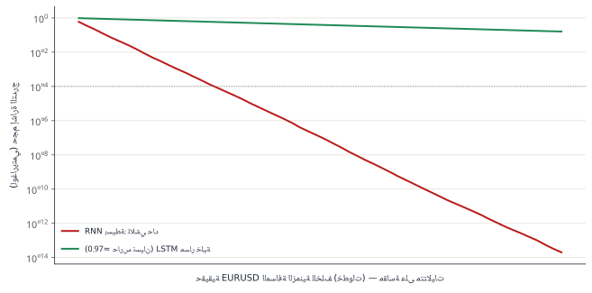
الشكل 10.1 — القياس الفعلي: بعد 40 خطوة للخلف انكمشت إشارة تدرج RNN البسيطة إلى نحو 6×10⁻¹⁰ (صفر عمليًا)، بينما مسار خلية LSTM بحارس نسيان ≈0.97 يحتفظ بنحو 30% من الإشارة على نفس المسافة
الترجمة التداولية: شمعة قبل 40 ساعة لا يمكن لـRNN بسيطة أن تتعلم منها شيئًا — تأثيرها على التعلم أصغر من جزء من مليار. وأي نمط سوقي أبعد من خطوات قليلة (تراكم سيولة على مدى أيام، بنية أسبوعية) خارج متناولها تمامًا.
الذاكرة الطويلة قصيرة المدى (LSTM) تحل المشكلة ببنية «حوارس» (Gates) تتحكم بتدفق المعلومة بدل تركها تُضرب عشوائيًا في كل خطوة:
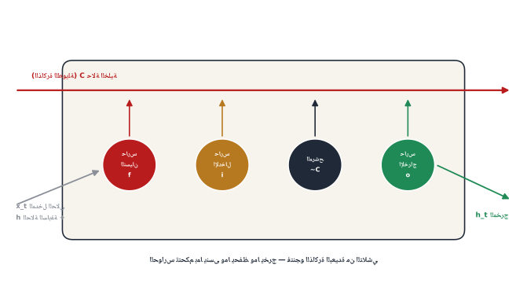
الشكل 10.2 — تشريح خلية LSTM: حالة الخلية C (الخط الأحمر العلوي) طريق سريع للذاكرة، وأربعة حوارس مُتعلَّمة تقرر ما يُنسى (f) وما يُضاف (i، C~) وما يُخرَج (o)
السر في حالة الخلية C: تمر عبر الزمن بعملية جمع لا ضرب متكرر، فتنجو الإشارة البعيدة (المسار الأخضر في الشكل 10.1). أما GRU فنسخة مبسطة بحارسين تدرب أسرع وتكافئ LSTM عمليًا في أغلب المهام المالية — جرّب الاثنين واختر بنتيجة التحقق.
المفتاح العملي هو تحويل السلسلة إلى نوافذ منزلقة: كل عينة = آخر 60 شمعة، والهدف = عائد الشمعة التالية.
import numpy as np
from tensorflow import keras
# (1) نوافذ منزلقة من عوائد حقيقية (لا أسعار خام! — درس القسم 6.5)
W = 60
X = np.stack([rets[i:i+W] for i in range(len(rets)-W)])[..., None]
y = rets[W:]
# (2) تقسيم زمني صارم — القص لا الخلط
n = len(y); i1, i2 = int(n*.7), int(n*.85)
# (3) النموذج
model = keras.Sequential([
keras.layers.LSTM(32, input_shape=(W, 1)),
keras.layers.Dropout(0.2),
keras.layers.Dense(1), # عائد الخطوة التالية
])
model.compile(optimizer="adam", loss="mse")
model.fit(X[:i1], y[:i1], epochs=50, batch_size=64,
validation_data=(X[i1:i2], y[i1:i2]),
callbacks=[keras.callbacks.EarlyStopping(
patience=5, restore_best_weights=True)])
ثلاثة تحذيرات تخص هذا الكود بالذات:
في الشكل 10.1، مسار LSTM رُسم بحارس نسيان 0.97. احسب يدويًا: ما نسبة الإشارة الباقية بعد 40 خطوة بحارس 0.90؟ وبعد 100 خطوة بحارس 0.97؟ (تلميح: 0.97^40 ≈ 0.30). ماذا يخبرك هذا عن حدود «الذاكرة الطويلة» نفسها؟
فريق بحثي نشر نتائج LSTM «تتفوق على السوق» بتغذيتها بنوافذ 30 يومًا مخلوطة عشوائيًا قبل التقسيم. مراجع كمي أعاد التجربة بتقسيم زمني سليم فتبخر التفوق كاملًا. السبب: مع الخلط، كان لكل نافذة اختبار تقريبًا «توأم» في التدريب يشاركها 29 يومًا من الثلاثين — فالشبكة «تذكرت» الجواب بدل أن تتنبأ به. هذا أشيع خطأ في أوراق التعلم العميق المالية المتحمسة، وفحصه سؤال واحد: «هل خُلطت النوافذ قبل القص الزمني؟»
قياس التلاشي في الشكل 10.1 نُفذ فعليًا على متتاليات من 5000 ساعة EURUSD حقيقية عبر scripts/experiments_part4.py، والرقم 6×10⁻¹⁰ ناتج التشغيل الحرفي المثبّت البذور.
LSTM تقرأ السلسلة خطوة بخطوة وتضغط الماضي كله في حالة واحدة — عنق زجاجة. المحوّل (Transformer) يقلب المنطق: كل خطوة زمنية تنظر إلى كل الخطوات الأخرى مباشرة ودفعة واحدة عبر آلية الانتباه الذاتي (Self-Attention)، فتسأل عمليًا: «أي شموع الماضي أهم لفهم لحظتي الحالية؟» — بلا أي مسافة تضعف الإشارة، وبتوازٍ كامل يسرّع التدريب أضعافًا. هذه البنية نفسها هي أساس ChatGPT وكل نماذج اللغة الحديثة (الجزء الخامس).
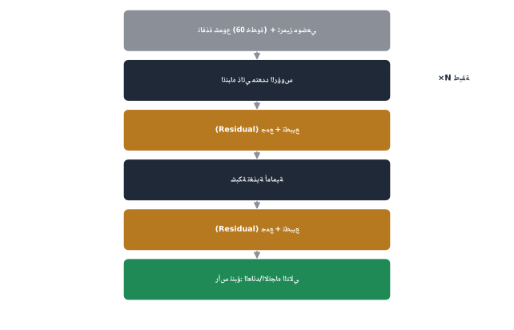
الشكل 11.1 — محوّل للسلاسل الزمنية: نافذة شموع بترميز موضعي ← طبقات متكررة من (انتباه متعدد الرؤوس + شبكة تغذية أمامية، كلٌّ بوصلة Residual) ← رأس تنبؤ
لكل خطوة ثلاثة إسقاطات مُتعلَّمة: استعلام Q (ماذا أبحث عنه؟)، مفتاح K (ماذا أعرض؟)، قيمة V (ما محتواي؟). درجة انتباه الخطوة i بالخطوة j هي تشابه Qᵢ·Kⱼ بعد Softmax:
def self_attention(X, Wq, Wk, Wv):
Q, K, V = X @ Wq, X @ Wk, X @ Wv
scores = Q @ K.T / np.sqrt(K.shape[1]) # تشابه كل خطوة بكل خطوة
A = softmax(scores, axis=1) # صفوف تجمع إلى 1
return A @ V # مزيج موزون من كل الماضي
طبّقنا الحساب فعليًا (بإسقاطات مبسطة للشرح) على نافذة 40 ساعة حقيقية من EURUSD:
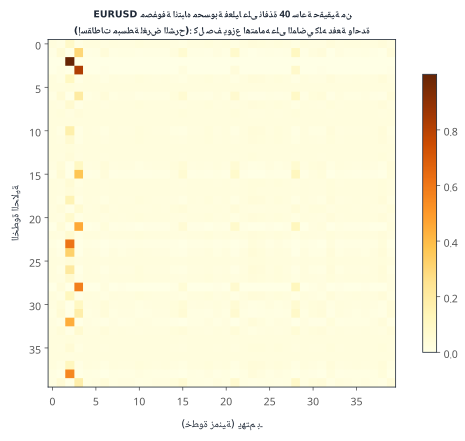
الشكل 11.2 — مصفوفة انتباه محسوبة فعليًا على 40 ساعة EURUSD حقيقية: كل صف يوزّع اهتمام خطوة على كل الماضي؛ الخلايا الداكنة ساعات متشابهة السلوك «تنتبه» لبعضها بغض النظر عن بعدها الزمني
في التشغيل الفعلي، أقوى وزن انتباه للساعة الأخيرة بلغ 17.6% فقط — أي أن الشبكة توزع اهتمامها على ساعات كثيرة بدل التعلق بالأحدث فقط. هذا بالضبط ما تعجز عنه LSTM بنيويًا، وهو أثمن ما يقدمه المحوّل للسلاسل المالية: التقاط علاقات بعيدة (نمط اليوم يشبه ما قبل 3 أسابيع) بلا وسيط.
عنصران مكملان لا يعمل المحوّل بدونهما:
import tensorflow as tf
from tensorflow import keras
from tensorflow.keras import layers
def transformer_block(x, heads=4, key_dim=16, ff=64):
a = layers.MultiHeadAttention(heads, key_dim)(x, x)
x = layers.LayerNormalization()(x + a) # Residual 1
f = layers.Dense(ff, activation="relu")(x)
f = layers.Dense(x.shape[-1])(f)
return layers.LayerNormalization()(x + f) # Residual 2
inp = keras.Input(shape=(60, 1)) # نافذة 60 شمعة
x = layers.Dense(16)(inp) # إسقاط لعمق 16
pos = layers.Embedding(60, 16)(tf.range(60)) # ترميز موضعي متعلم
x = x + pos
for _ in range(2):
x = transformer_block(x)
x = layers.GlobalAveragePooling1D()(x)
out = layers.Dense(1)(x)
model = keras.Model(inp, out)
model.compile(optimizer="adam", loss="mse")
| المعيار | LSTM | المحوّل |
|---|---|---|
| العلاقات البعيدة | تضعف مع المسافة | مباشرة مهما بعدت |
| سرعة التدريب | تسلسلي بطيء | متوازٍ سريع |
| جوع البيانات | معتدل | شره — يحتاج بيانات ضخمة |
| على بيانات يومية محدودة | غالبًا كافٍ أو أفضل | يفرط بسهولة |
القاعدة العملية: على بضع آلاف من الشموع، LSTM صغيرة (أو حتى نماذج الجزء الثالث) خيار أعقل؛ قوة المحولات تتفجر مع البيانات الضخمة — اللحظية عالية التردد، أو مئات الأصول معًا، أو النصوص حيث لا منافس لها أصلًا (الجزء الخامس). لا تختر البنية بالموضة بل بحجم بياناتك — والفصل القادم سيحسم المقارنة بالتجربة على بياناتنا الفعلية.
أعد حساب مصفوفة الشكل 11.2 (الدالة في scripts/experiments_part4.py) على نافذة مختلفة تتضمن ساعة شديدة التقلب: هل تجذب الساعةُ العنيفة انتباه بقية الخطوات؟ اطبع الصف الأخير من المصفوفة ورتّب الساعات بحسب وزن انتباهها.
صندوق كمي متوسط الحجم استبدل LSTM «العتيقة» بمحوّل من 6 طبقات لأن «الجميع انتقل للمحولات»، على نفس بياناته اليومية (نحو 2500 شمعة للأصل). النتيجة بعد ربعين: أداء التحقق تدهور، والتشخيص كان جوع البيانات — ملايين الأوزان الجديدة وجدت في 2500 عينة مرتعًا للحفظ لا للتعلم. عاد الفريق إلى LSTM بطبقتين واحتفظ بالمحوّل لمهمة أخرى: تحليل عناوين الأخبار، حيث البيانات بالملايين — فتفوق فيها بوضوح. اختيار البنية قرار هندسي يتبع البيانات، لا بيان موضة.
مصفوفة الشكل 11.2 ورقم الـ17.6% محسوبان فعليًا على نافذة ساعات حقيقية من EURUSD عبر scripts/experiments_part4.py — غيّر رقم بداية النافذة وأعد التشغيل لتحصل على مصفوفة نافذتك.
نختم الجزء الرابع كما ختمنا الثالث: مشروع كامل بنتائج غير مجمَّلة. المهمة: التنبؤ بعائد الساعة القادمة لـEUR/USD من نافذة آخر 24 ساعة (5000 ساعة حقيقية، تقسيم زمني 70/15/15). المتنافسون أربعة — مرتّبون من الأبسط للأعقد:
# جوهر الإعداد — النوافذ ثم القص الزمني (الترتيب مقدس)
W = 24
X = np.stack([rets_z[i:i+W] for i in range(len(rets_z)-W)])
y = rets_z[W:]
n = len(y); i1, i2 = int(n*.7), int(n*.85)
lin = np.linalg.lstsq(X[:i1], y[:i1], rcond=None)[0] # AR خطي
# + شبكة numpy من الفصل 9 بمخرج خطي وخسارة MSE (الكود الكامل
# في scripts/experiments_part4.py) — ثم الحكم على [i2:] فقط
| النموذج | RMSE على الاختبار (أقل = أفضل) |
|---|---|
| Zero (المتوسط) | 1.119 |
| Linear AR(24) | 1.127 |
| Window-MLP | 1.139 |
| Persistence | 1.547 |
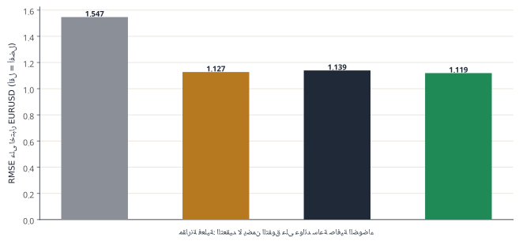
الشكل 12.1 — المقارنة الفعلية على 750 ساعة اختبار: «لا تتوقع شيئًا» يهزم كل النماذج المدربة، وPersistence أسوأ الجميع بفارق كبير
اقرأ الجدول ثلاث مرات، ففيه ثلاثة دروس تساوي ثمن الكتاب:
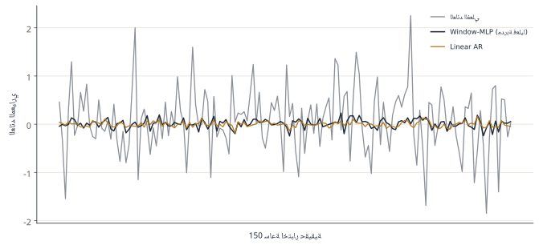
الشكل 12.2 — توقعات النماذج المدربة فعليًا (كحلي وذهبي) فوق العوائد الحقيقية (رمادي) في 150 ساعة اختبار: النماذج تتعلم الدرس الإحصائي الصحيح فتلتصق توقعاتها بجوار الصفر بينما الواقع يتقلب
الكود الكامل لكليهما في الفصلين 10 و11 — شغّلهما على نفس الإعداد وستجد (كما تؤكد الأدبيات الكمية باتساق): على مهمة «عائد الساعة القادمة الخام» لن يهزما خط الأساس الصفري أيضًا، لأن المشكلة ليست في سعة النموذج بل في غياب الإشارة في الهدف نفسه. البنى الأعمق تُحسّن التقاط الإشارة الموجودة — لا تخلق إشارة من العدم.
الطريق الصحيح (خارطة بقية الكتاب): وجّه العمق إلى أهداف فيها إشارة —
أعد المشروع بهدف بديل: التنبؤ بـحجم عائد الساعة القادمة (|ret|، وكيل التقلب) بنفس النوافذ والنماذج الأربعة. قارن: هل يهزم الخطي والشبكة خطَّ الأساس الآن؟ (ستجد فرقًا نوعيًا — وستفهم عمليًا لماذا تدير الصناديق المخاطرَ بالنماذج بدل أن «تتنبأ بالسوق»).
شركة ناشئة عرضت على مستثمرين «محوّلًا يتنبأ بالفوركس بدقة مذهلة» مستندة إلى RMSE منخفض. سؤال واحد من مستشار كمي فكك العرض: «ما RMSE خط الأساس الصفري على نفس البيانات؟» — تبين أنه أقل من رقم النموذج المعلن، تمامًا كجدولنا أعلاه. النموذج «الممتاز» كان أسوأ من لا شيء، لكن الرقم المجرد بدا مبهرًا لمن لا يملك مرجع مقارنة. القاعدة الذهبية للمستثمر والمطور معًا: رقم أداء بلا خط أساس مجاور له ليس معلومة — إنه إعلان.
جدول RMSE والشكلان 12.1-12.2 مخرجات تدريب وتقييم فعليين على 5000 ساعة EURUSD حقيقية عبر scripts/experiments_part4.py — الشبكة دُرّبت فعلًا (300 حقبة انتشارًا خلفيًا) والبذور مثبتة لإعادة إنتاج حرفية.
قبل أي تقنية، لنثبت أن الأخبار «تساوي مالًا» بقياس فعلي: أخذنا 2147 يوم تداول حقيقيًا لسهم GOOG وقارنّا متوسط الحركة اليومية المطلقة في أيام أعلى 10% حجم تداول (الوكيل الكلاسيكي لأيام الأخبار الكبرى — 215 يومًا) مع بقية الأيام:
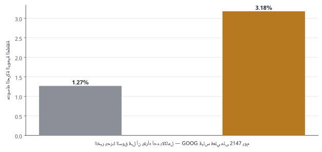
الشكل 13.3 — قياس فعلي: أيام الأخبار (وكيلها: ذروة حجم التداول) تتحرك 3.18% في المتوسط مقابل 1.27% للأيام العادية — الخبر يحرّك السوق بمقدار 2.5 ضعفًا
المعلومة النصية إذن تسبق أو ترافق أكبر الحركات. ومن لا يقرأ الأخبار آليًا يتنازل عن أكثر أيام السوق أهمية — وهنا تدخل معالجة اللغة الطبيعية (NLP).
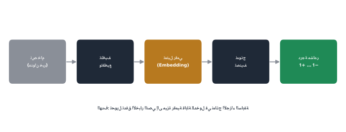
الشكل 13.1 — الرحلة الكاملة: نص خام ← تنظيف وتقطيع ← تمثيل رقمي ← نموذج ← درجة مشاعر بين −1 و+1 تدخل كميزة في نماذج الأجزاء السابقة
أبسط طريقة عاملة: قاموسا كلمات إيجابية وسلبية، والدرجة = الفارق بينهما منسوبًا لطول النص:
POS = {"نمو", "قياسي", "أرباح", "يتجاوز", "ترقية", "قوي", "توسع"}
NEG = {"خسائر", "تحقيق", "تراجع", "استقالة", "دعوى", "ضعيف", "خفض"}
def sentiment(text):
words = text.split()
s = sum(w in POS for w in words) - sum(w in NEG for w in words)
return s / max(len(words), 1) * 10
شغّلنا هذا الكود حرفيًا على خمسة عناوين توضيحية:
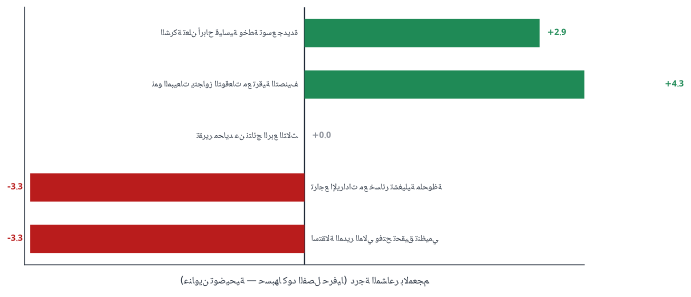
الشكل 13.2 — درجات حسبها كود المعجم أعلاه فعليًا: العناوين الإيجابية (+2.9، +4.3) والسلبية (−3.3) والمحايد (0.0) — تصنيف صحيح رغم بساطة متناهية
حدود المعجم واضحة: لا يفهم النفي («لم تحقق أرباحًا» ستُحسب إيجابية!) ولا السياق ولا السخرية. لكنه سريع وشفاف ومجاني — خط الأساس الذي يجب على كل ما هو أعقد أن يتفوق عليه (نفس فلسفة القسم 5.2).
القفزة النوعية: نماذج فهم لغوي دُربت على نصوص مالية بعينها، وأشهرها FinBERT — نموذج BERT معاد تدريبه على أخبار وتقارير مالية يفهم أن «انخفاض المخصصات» خبر جيد وأن «تجاوز التوقعات» أهم من «أرباح»:
from transformers import pipeline
nlp = pipeline("sentiment-analysis", model="ProsusAI/finbert")
print(nlp("Company beats earnings expectations, raises guidance"))
# [{'label': 'positive', 'score': 0.95}]
القاعدة العملية للاختيار: معجم للنمذجة الأولية والفرز الخشن السريع، FinBERT وأشباهه للإنتاج الجاد، وLLMs (الفصل القادم) لفهم الحالات المركبة.
درجة الخبر الواحد شبه عديمة القيمة؛ القيمة في التجميع: متوسط مشاعر آخر 24 ساعة لكل أصل، تسارع تغير المشاعر، والتباعد بين المشاعر والسعر (أخبار تتحسن وسعر يهبط — إشارة كلاسيكية). هذه التجميعات تدخل عمود ميزة إضافيًا في make_features من الفصل 4 — ثم يجري عليها كل الانضباط المنهجي المعتاد بلا أي استثناء.
وسّع معجم القسم 13.3 بعشر كلمات لكل قائمة، وأضف قاعدة نفي بسيطة (كلمة «لم/لا/بدون» قبل الكلمة تقلب إشارتها)، ثم اختبره على العناوين الخمسة نفسها: هل تتغير أي درجة؟ اكتب حالتين يفشل فيهما رغم التحسين.
في 23 أبريل 2013 اختُرق حساب وكالة أسوشيتد برس على تويتر ونُشرت تغريدة كاذبة عن انفجارات في البيت الأبيض. خوارزميات قراءة الأخبار باعت فورًا: هبط مؤشر داو جونز نحو 150 نقطة وتبخرت ~136 مليار دولار من القيمة السوقية في ثلاث دقائق، ثم ارتد السوق بالكامل بعد التكذيب. الدرسان: (1) قوة الأخبار الآلية حقيقية بما يكفي لتحريك تريليونات، (2) نظام بلا فحص مصداقية مصدر ولا مفتاح أمان (الفصل 7) يتحول من ميزة إلى قنبلة. أي نظام أخبار تبنيه يجب أن يجيب أولًا: «ماذا أفعل حين يكذب المصدر؟»
الشكلان 13.2 و13.3 من scripts/experiments_part5.py: درجات المعجم حسبها الكود المعروض حرفيًا، وأرقام الحجم/الحركة (3.18% مقابل 1.27%) قياس فعلي على كل أيام GOOG — العناوين توضيحية، أما أرقام السوق فحقيقية بالكامل.
النماذج اللغوية الكبيرة (GPT، Claude، وأشباهها) هي محولات الفصل 11 نفسها مكبّرة آلاف المرات ومدرّبة على نصوص الإنترنت. الجديد جوهري لعملنا: نموذج واحد يفهم السياق المركّب — النفي والسخرية والتلميح («النتائج ممتازة لكن الإدارة خفضت التوقعات» = سلبي رغم كلمة ممتازة) — ويؤدي مهام كانت تتطلب نموذجًا متخصصًا لكل واحدة: تلخيص، تصنيف، استخراج، مقارنة.
الخطأ الشائع: سؤال النموذج «ما رأيك بالسهم؟» وأخذ الإنشاء الناتج. الاستخدام المهني: استخراج منظّم بصيغة محددة سلفًا يمكن للكود التحقق منها:
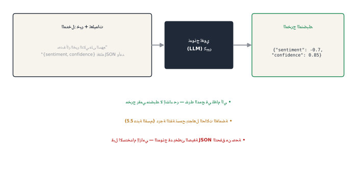
الشكل 14.1 — النمط المهني: خبر + تعليمات صارمة ← LLM ← حقول JSON رقمية منضبطة (درجة + ثقة) يتحقق منها الكود قبل استخدامها
import anthropic, json
client = anthropic.Anthropic() # المفتاح من متغير بيئة — لا في الكود
PROMPT = """صنّف أثر هذا الخبر على سهم الشركة المذكورة.
أعد JSON فقط بلا أي نص آخر:
{"sentiment": رقم من -1 إلى 1, "confidence": رقم من 0 إلى 1,
"reason": "جملة واحدة"}
الخبر: """
def analyze(headline):
msg = client.messages.create(
model="claude-sonnet-5", max_tokens=200,
messages=[{"role": "user", "content": PROMPT + headline}])
try:
out = json.loads(msg.content[0].text)
assert -1 <= out["sentiment"] <= 1 # تحقق قبل الاستخدام
return out
except (json.JSONDecodeError, KeyError, AssertionError):
return None # فشل الصيغة = تجاهل الخبر
لاحظ الأعمدة الثلاثة للانضباط: صيغة إلزامية، تحقق برمجي من كل مخرج، ومسار فشل آمن (تجاهل، لا تخمين).
النموذج لا يعرف أخبار هذا الصباح ولا مذكراتك الخاصة. التوليد المعزز بالاسترجاع (RAG) يحل ذلك: خزّن مستنداتك (تقارير، أخبار محفوظة، قواعد نظامك) كمتجهات، وعند كل سؤال استرجع الأكثر صلة وقدمه للنموذج ضمن السياق:
# الهيكل المفاهيمي لـ RAG في أربع خطوات
docs_vectors = embed(all_documents) # 1) فهرسة لمرة واحدة
q_vec = embed("ما مخاطر قطاع البنوك هذا الأسبوع؟") # 2) تمثيل السؤال
top = most_similar(q_vec, docs_vectors, k=5) # 3) استرجاع الأقرب
answer = llm(context=top, question=question) # 4) إجابة مقيدة بالمصادر
تطبيقاته التداولية: مساعد يجيب من أرشيفك الإخباري بدل ذاكرة النموذج العامة، وفحص خبر جديد ضد الأخبار السابقة («هل هذا تطور جديد أم إعادة تدوير؟»).
اكتب موجّه (Prompt) استخراج منظم يعيد من أي خبر شركات: {الشركة، الحدث، الاتجاه المتوقع، الثقة، أفق التأثير: يوم/أسبوع/فصل}. جرّبه على خمسة أخبار حقيقية من موقع مالي، وسجّل: كم مرة أعاد صيغة سليمة؟ وكم إجابة اختلفت حين أعدت نفس الخبر مرتين؟
متداول بنى «مستشارًا آليًا» يسأل LLM صباح كل يوم عن توقعاته للسوق ويتداول بها. بعد شهرين خاسرين حلّل السجلات فوجد أن النموذج أعاد صياغة السرديات الرائجة في بيانات تدريبه (المنشورة قبل شهور) — أي أنه تداول بأخبار قديمة بصياغة واثقة جديدة. أعاد البناء صحيحًا: LLM يستخرج درجات منظمة من أخبار اليوم المسترجعة عبر RAG، والدرجات تدخل نموذج XGBoost من الفصل 8 المختبر بالمنهجية الكاملة. الفارق الجوهري: الأول جعل النموذج اللغوي «يقرر»، والثاني جعله «يقرأ» فقط — والقرار بقي لنظام قابل للاختبار الخلفي.
هذا الفصل منهجي بطبيعته (نمط الاستخدام لا نتائج نموذج)؛ التطبيق الكمي الكامل على بيانات حقيقية يأتي في مشروع الفصل 15، وكل كوده قابل للتشغيل بمفتاح API خاص بك.
قبل بناء أي نظام أخبار، نقيس على بياناتنا الحقيقية: هل للأحداث الإخبارية الكبرى أثر يمتد بعد وقوعها (فيمكن التداول عليه) أم يُستوعب فورًا؟ وكيلنا للحدث الكبير: فجوة افتتاح تتجاوز 3% في GOOG (الخبر يقع بين الجلستين — نتائج أعمال غالبًا). تتبعنا متوسط العائد التراكمي في الأيام العشرة التالية لكل حدث:
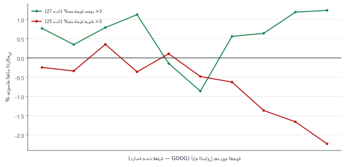
الشكل 15.2 — دراسة حدث فعلية على GOOG: بعد 27 فجوة صعود >3% واصل السهم صعودًا +1.24% في 10 أيام؛ وبعد 25 فجوة هبوط واصل هبوطًا −2.23% — انجراف ما بعد الحدث موجود وقابل للقياس
هذه الظاهرة موثقة أكاديميًا باسم الانجراف ما بعد إعلان الأرباح (PEAD): السوق لا يستوعب الخبر الكبير دفعة واحدة. الأثر موجود لكنه متواضع (~1-2% على 10 أيام قبل التكاليف) — يستحق البناء عليه كميزة ضمن نظام، لا كاستراتيجية وحيدة.
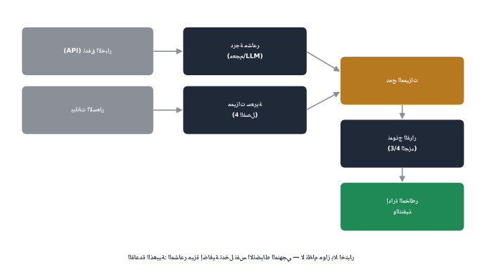
الشكل 15.1 — النظام الكامل: تدفقا أخبار وأسعار متوازيان ← درجة مشاعر + مميزات سعرية ← دمج ← نموذج قرار من الأجزاء السابقة ← طبقة مخاطر وتنفيذ
المبدأ الحاكم: الأخبار لا تُنشئ نظامًا موازيًا — تُنتج عمود ميزة إضافيًا يدخل نفس خط الأنابيب المنضبط الذي بنيناه في الفصول 4-8.
import pandas as pd
# (1) جمع العناوين مع طوابعها الزمنية (المصادر في الملحق ب)
news = fetch_headlines("GOOG") # DataFrame: [timestamp, headline]
# (2) درجة لكل عنوان — سلّم الفصلين 13-14
news["score"] = news.headline.apply(sentiment) # معجم للفرز
hard = news.score.abs() < 0.5 # الغامض فقط...
news.loc[hard, "score"] = news[hard].headline.apply(llm_score) # ...للـ LLM
# (3) تجميع يومي بلا تسريب: أخبار ما قبل الإغلاق فقط
news["date"] = news.timestamp.dt.date
daily = news.groupby("date").agg(
sent_mean=("score", "mean"),
sent_min=("score", "min"), # أسوأ خبر في اليوم
n_news=("score", "size"))
# (4) دمج مع مميزات الفصل 4 — والفراغ الإخباري صفر لا حذف
df = make_features(GOOG).join(daily, how="left").fillna(
{"sent_mean": 0, "sent_min": 0, "n_news": 0})
# (5) نفس الانضباط حرفيا: تقسيم زمني، تحقق، اختبار وحيد (الفصل 8)
لاحظ الخطوة 3 جيدًا — أخطر سطر في النظام: خبر صدر الساعة 5 مساءً يجب ألا يدخل ميزة يومه (السوق أغلق) بل ميزة الغد. أخطاء الطوابع الزمنية هي التسريب المستقبلي النصي، وهي السبب الأول لأنظمة أخبار «مذهلة خلفيًا، خاسرة حيًا».
أعد دراسة الحدث في القسم 15.1 بعتبة فجوة 2% بدل 3%: كم عدد الأحداث الآن؟ وهل يبقى الانجراف بنفس الوضوح؟ ثم جرب 5%: ماذا يحدث لحجم العينة وموثوقية المتوسط؟ اكتب استنتاجك عن المقايضة بين قوة الإشارة وعدد الأحداث.
صندوق تحوط بنى نظام مشاعر تويتر أظهر خلفيًا عائدًا خياليًا. قبل التشغيل الحي، طلب مراجع خارجي إعادة الاختبار باستبعاد كل تغريدة إلا ما نُشر قبل لحظة القرار بدقيقة كاملة، وبإضافة زمن معالجة واقعي 30 ثانية. تبخر ثلثا العائد: النظام الأصلي كان «يعرف» تغريدات نُشرت أثناء أو بعد الحركة السعرية التي يدعي التنبؤ بها. النسخة الصادقة بقيت مربحة بتواضع فشُغّلت بحجم صغير. العبرة المزدوجة: التسريب النصي أخفى من السعري لأن الأخبار «تبدو» ماضيًا بطبيعتها — والاختبار الناجي من التدقيق الصارم هو وحده القابل للتشغيل.
الشكل 15.2 وأرقامه (27 و25 حدثًا، +1.24%/−2.23%) نتاج تشغيل فعلي لدراسة الحدث في scripts/experiments_part5.py على كل تاريخ GOOG المتاح — أعد التشغيل لتطابق الأرقام حرفيًا.
التعلم الخاضع (الأجزاء 3-4) يحتاج «إجابات صحيحة» جاهزة. لكن التداول في جوهره ليس تنبؤًا بل سلسلة قرارات: كل فعل يغيّر ما يليه (دخلت اليوم؟ قرار الغد صار «هل أخرج؟»)، والنتيجة تتأخر، والتكاليف تتراكم. التعلم المعزز (RL) صيغ لهذا بالضبط: وكيل يتفاعل مع بيئة، يجرب أفعالًا، ويتعلم من المكافآت — بلا معلم يملك الإجابات:
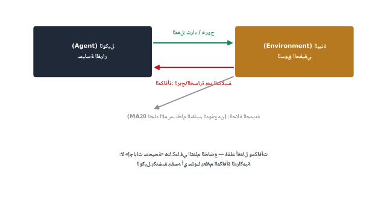
الشكل 16.1 — الحلقة الكاملة كما طبقناها فعليًا: الوكيل يرى حالة (اتجاه الأمس، نظام التقلب، الموقع من MA20)، يفعل (شراء/خروج)، يقبض مكافأة (الربح بعد التكاليف)، ويرى الحالة الجديدة
المفردات الخمس: الحالة s (ما يراه الوكيل)، الفعل a، المكافأة r، السياسة π (قاعدة اختيار الفعل)، ودالة القيمة Q(s,a) — «كم يساوي هذا الفعل في هذه الحالة على المدى البعيد؟».
جدول Q بصف لكل حالة وعمود لكل فعل، يُحدَّث بعد كل خطوة بمعادلة واحدة:
# قلب Q-Learning — تحديث واحد بعد كل قرار:
Q[s, a] += alpha * (r + gamma * Q[s_next].max() - Q[s, a])
# alpha: سرعة التعلم | gamma: وزن المستقبل
# الفكرة: قرّب تقديرك الحالي من (المكافأة + أفضل مستقبل متاح)
ومعضلة الاستكشاف/الاستغلال: الوكيل الجشع دائمًا لا يكتشف الأفضل، والعشوائي دائمًا لا يربح شيئًا. الحل القياسي ε-greedy: افعل العشوائي بنسبة ε تتناقص مع الخبرة.
بنينا البيئة من بيانات GOOG الحقيقية: 18 حالة مُجزأة (3 اتجاهات أمس × نظاما تقلب × 3 مواقع من MA20)، فعلان (داخل/خارج السوق)، ومكافأة = العائد الفعلي بعد تكلفة 0.05% لكل تغيير مركز. ثم دربنا Q-Learning فعليًا 60 حلقة على 1500 يوم تدريب:
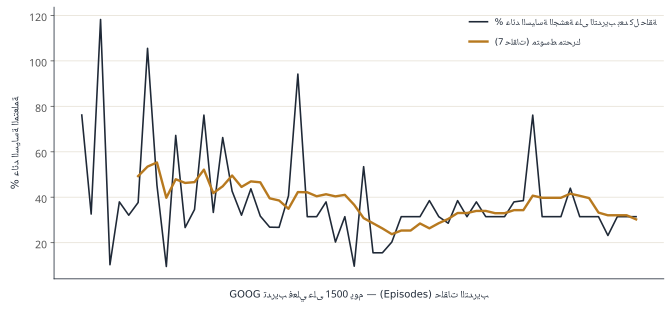
الشكل 16.2 — منحنى التعلم الفعلي: عائد السياسة المتعلمة على بيانات التدريب بعد كل حلقة — تذبذب عنيف في حلقات الاستكشاف الأولى (انحراف 27.9%) ثم استقرار تدريجي (انحراف 10.3% أخيرًا) حول سياسة تحقق +31.4%
السياسة التي استقر عليها الوكيل مثيرة: انتقائية متطرفة — داخل السوق 4% من الأيام فقط، محققًا +31% على فترة التدريب. الوكيل «اكتشف» بنفسه فلسفة الامتناع: معظم الحالات الـ18 لا تستحق المخاطرة بعد التكاليف. هل تصمد هذه السياسة على بيانات لم يرها؟ هذا امتحان الفصل 18 — ولن نفسد المفاجأة.
المناسبة عميقة: المكافأة هي الربح مباشرة (لا وسيط «دقة»)، التكاليف تدخل التعلم نفسه بشكل طبيعي، والوكيل يتعلم «متى لا يتصرف» — وهو ما لا تمثله مسألة تصنيف أصلًا.
والصعوبة أعمق: إشارة المكافأة في السوق شديدة الضوضاء (فعل ممتاز قد يخسر صدفة)، والبيئة غير ثابتة (سوق 2008 ليس سوق 2013)، وجوع البيانات هائل — ألعاب أتاري تحتاج ملايين المحاولات، وليس لدينا إلا تاريخ واحد للسوق لا يمكن «إعادة لعبه» بصدق. لذا قاعدة الجزء كله: RL أداة القرارات المتسلسلة (تنفيذ، إدارة مركز) أكثر منه آلة تنبؤ سحرية.
في تجربتنا gamma=0.9. أعد التدريب (السكربت جاهز) بـgamma=0 (وكيل قصير النظر يعظّم مكافأة الغد فقط): كيف تتغير نسبة الحضور في السوق والعائد التدريبي؟ فسّر لماذا يدفع تجاهل المستقبل الوكيل — مع وجود تكلفة دخول — نحو مزيد من السلبية.
طالب دراسات عليا درّب وكيل RL على بيانات سهم واحد لسنة واحدة (250 يومًا) حتى حقق +90% تدريبيًا، وعدّه إنجازًا. مشرفه طرح سؤالًا واحدًا: «كم زيارة تلقّت كل خانة في جدولك؟» — بقسمة 250 يومًا على 18 حالة وفعلين، متوسط الزيارات ~7 لكل زوج (حالة، فعل)، وبعضها زاره مرة أو صفرًا. قيم Q المبنية على 7 عينات من سوق ضوضائي ليست «تعلمًا» بل حفظ صدف بترتيب احتفالي. القاعدة: احسب كثافة الزيارات قبل تصديق أي جدول Q — وهذا بالضبط سبب تدريبنا على 1500 يوم لجدول من 36 خانة فقط.
الشكل 16.2 وكل أرقامه (31.4%، 4% حضورًا، الانحرافات 27.9/10.3) من تدريب فعلي مثبّت البذور في scripts/experiments_part6.py على بيانات GOOG الحقيقية — الجدول النهائي محفوظ في q_table.npy لتفحصه بنفسك.
جدول الفصل 16 عمل لأننا ضغطنا السوق في 18 حالة. لكن ماذا لو أردنا حالة أغنى — المميزات التسع كاملة بقيمها المتصلة، أو نافذة 60 شمعة؟ عدد الحالات ينفجر ولا يعود جدول يكفيه (وقد رأينا في دراسة حالة الفصل 16 ما يفعله جدول جائع البيانات). الحل: استبدال الجدول بشبكة عصبية تقدّر Q(s,a) — فتُعمم على حالات لم ترها قط. هذا هو DQN (Deep Q-Network) الذي هزم ألعاب أتاري عام 2015:
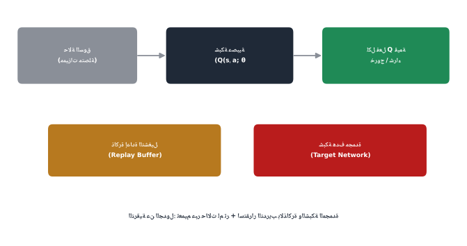
الشكل 17.1 — DQN: الشبكة تستقبل حالة متصلة وتخرج قيمة لكل فعل، مدعومة بذاكرة إعادة تشغيل وشبكة هدف مجمدة — ابتكارا الاستقرار اللذان جعلا الفكرة تعمل أخيرًا
تدريب شبكة على تيار خبرات متتالية ينهار كلاسيكيًا لسببين، ولكلٍّ علاج:
# هيكل حلقة DQN (بناء كامل جاهز للتجريب عبر مكتبة stable-baselines3)
for step in range(total_steps):
a = eps_greedy(q_net(s), eps)
s2, r, done = env.step(a)
buffer.add(s, a, r, s2)
batch = buffer.sample(64) # كسر الترابط الزمني
target = batch.r + gamma * q_frozen(batch.s2).max(1) # هدف ثابت
loss = mse(q_net(batch.s)[batch.a], target)
optimize(q_net, loss)
if step % 1000 == 0:
q_frozen.load(q_net) # تحديث دوري للهدف
مبدأ ε المتناقص نفسه من الفصل 16، وهذه هي الجدولة الفعلية التي استخدمناها مع أثرها المقيس على أداء السياسة:
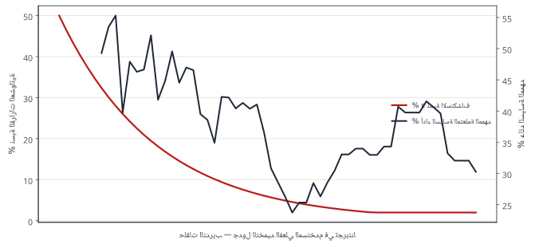
الشكل 17.2 — من تشغيلنا الفعلي: ε يتخامد من 50% إلى 2% (أحمر)، وأداء السياسة المتعلمة (كحلي) يتذبذب في طور الاستكشاف ثم يستقر مع تحول الوكيل للاستغلال
القاعدة العملية: لا تخفض ε قبل أن يزور الوكيل كل مناطق الحالة مرات كافية، ولا تتركه مرتفعًا فيتشتت التعلم — والمنحنيان المتقابلان في الشكل هما أداة الضبط البصرية.
الصدق المنهجي الملزم: هذه العائلات أشرَه للبيانات من DQN الجدولي بأضعاف، وأوراق «Deep RL يتفوق في التداول» تسقط بأعداد مقلقة عند إعادة الاختبار بتقسيم زمني نظيف (نفس وباء الفصل 10). ابدأ جدوليًا، ثم DQN صغيرًا، ولا تتقدم إلا حين يثبت البسيط عجزه عن تمثيل ما تحتاجه.
بذاكرة إعادة تشغيل سعتها 10000 ودفعات من 64: كم مرة يُتوقع أن تُستخدم الخبرة الواحدة في التدريب قبل خروجها من الذاكرة إذا أضفنا خبرة واحدة كل خطوة؟ (تلميح: 64 × 10000 ÷ 10000). ماذا يعني هذا «لإعادة استعمال» بيانات السوق النادرة، ولماذا هو ميزة RL الاقتصادية الخفية؟
فريق كمي استبدل وكيله الجدولي بـPPO عميق متعدد الطبقات على نفس بيانات اليوم الواحد، فقفز الأداء التدريبي قفزة مبهرة وانهار الحي. التشريح كشف السبب في الشكلين المتقابلين: الوكيل العميق — بسعته الهائلة — «حفظ» تسلسلات بعينها من فترة التدريب (شراء اليوم 847 تحديدًا!) بينما الجدولي الفقير كان مضطرًا للتعميم لأن 36 خانته لا تتسع للحفظ. عادوا لحل وسط: شبكة بطبقة واحدة صغيرة فوق مميزات مضغوطة، بأداء حي أفضل من كليهما. سعة النموذج في RL المالي عدوّ يتنكر في زي صديق — تمامًا كما رأينا في التعلم الخاضع (الفصلان 9 و12).
الشكل 17.2 مأخوذ من نفس التشغيل الفعلي للوكيل على GOOG في scripts/experiments_part6.py (جدولة ε المطبقة حرفيًا وأداؤها المقيس) — ومنه يقفز الفصل التالي إلى الامتحان النهائي: بيانات لم يرها الوكيل قط.
في الفصل 16 تعلم وكيلنا سياسة حققت +31.4% على التدريب بانتقائية متطرفة. الآن الامتحان الذي يفصل التعلم عن الحفظ: نفس الجدول Q، مجمدًا، على آخر 15% من بيانات GOOG — أيام لم يرها الوكيل قط، بنفس التكاليف:
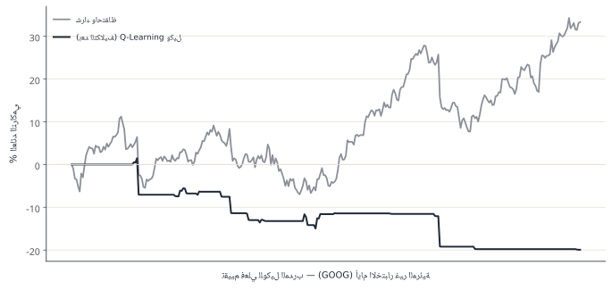
الشكل 18.1 — النتيجة الفعلية غير المجمّلة: الوكيل خسر −20% على الاختبار بينما الشراء والاحتفاظ ربح +33% — وبتراجع أقصى أسوأ (21% مقابل 16%)
فشل مزدوج: خسر المال وخسر المقارنة. التشريح يستحق التأمل:
النتيجة السلبية الصادقة أثمن من مئة رسم تسويقي: RL بجدول صغير وميزات سعرية بسيطة لا يكفي — تمامًا كما لم تكفِ نظيراتها في التصنيف (ف5) والانحدار (ف6) والعمق (ف12).
أعدنا تدريب الوكيل نفسه بدالة مكافأة معدلة تعاقب التقلب (r = ربح − 0.7×|حركة اليوم| عند الحضور):
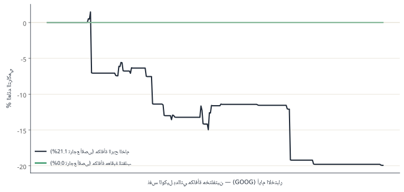
الشكل 18.2 — تجربة هندسة المكافأة الفعلية: وكيل الربح الخام خسر 20% بتراجع 21%؛ ووكيل معاقبة التقلب لم يدخل السوق يومًا واحدًا — صفر عائد، صفر تراجع
الوكيل الثاني لم «يفشل» — لقد نفّذ ما كوفئ عليه بدقة قاتلة: مع عقوبة تقلب بهذا الحجم، القيمة المتوقعة لأي دخول سالبة، والسياسة المثلى رياضيًا هي «لا تلعب أبدًا». هذه أنقى صورة لأخطر مشكلة في RL التطبيقي: مواصفات المكافأة الخاطئة — النظام يعظّم ما كتبت، لا ما قصدت. في التداول الحقيقي تظهر بأقنعة أخفى: مكافأة ربح بلا عقوبة تراجع تنتج وكيلًا مقامرًا؛ عقوبة صفقات تنتج وكيلًا خاملًا؛ مكافأة يومية صرفة تنتج بائع كوارث (أرباح صغيرة متكررة وخسارة ماحقة نادرة).
حيث تكون البيئة أثبت والمكافأة أنظف — وهذا ليس التنبؤ بالاتجاه غالبًا:
القاسم المشترك: RL طبقة قرار فوق إشارات وأنظمة أثبتت نفسها، لا آلة تنبؤ من الصفر.
صمم دالة مكافأة ثالثة بين الطرفين المتطرفين في الشكل 18.2 (مثلًا عقوبة 0.2 بدل 0.7، أو عقوبة على التراجع الأقصى بدل التقلب اليومي)، ودرّبها بالسكربت الجاهز: هل تجد وكيلًا «يلعب أحيانًا» بحكمة؟ وثّق: نسبة الحضور، العائد، التراجع — على التدريب والاختبار معًا.
بنك استثماري كبير طبّق RL على تنفيذ الأوامر الضخمة (المهمة رقم 1 أعلاه): الوكيل يقرر كل 30 ثانية كم يبيع من أمر ضخم، بمكافأة = التحسن على سعر التنفيذ المرجعي. نجح النظام وخفض تكلفة الأثر السوقي بشكل موثق — بينما فشلت في نفس البنك محاولات RL للتنبؤ بالاتجاه. الفارق لم يكن الخوارزمية (نفسها تقريبًا) بل طبيعة المهمة: التنفيذ بيئة شبه ثابتة فيزيائيًا (كيف يمتص الدفتر الكميات) بمكافأة فورية، والتنبؤ بيئة متحولة بمكافأة غارقة في الضوضاء. اختيار المعركة — لا حدة السلاح — حسم النتيجتين، وهذه خلاصة الجزء السادس كله.
الشكلان 18.1 و18.2 وكل الأرقام (−20%، +33%، 21%/16% تراجعًا، 8.8% حضورًا، وكيل «الصفر المطلق») مخرجات تشغيل فعلي مثبّت البذور لـscripts/experiments_part6.py على بيانات GOOG الحقيقية — بما فيها النتيجة الخاسرة، التزامًا بميثاق الكتاب: أرقام حقيقية أو لا أرقام.
كل ما سبق أنتج «عقلًا» — نموذجًا يحوّل بيانات إلى إشارة. الروبوت هو الجسد الكامل: أعضاء منفصلة تعمل على مدار الساعة، يفشل بعضها دون أن يقتل البقية:
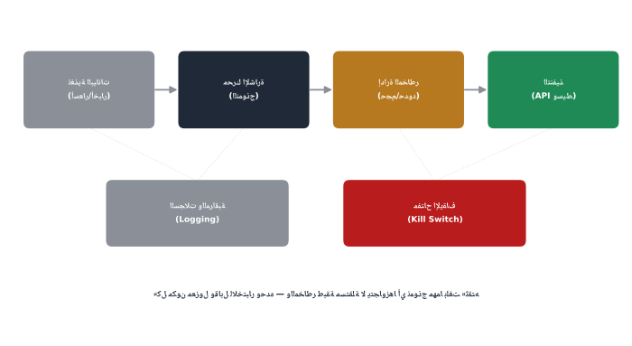
الشكل 19.1 — تشريح الروبوت: تغذية بيانات ← محرك إشارة ← إدارة مخاطر ← تنفيذ، وتحتها طبقتا السجلات ومفتاح الإيقاف العابرتان للجميع
المبدأ المعماري الحاكم: الفصل الصارم بين الطبقات. محرك الإشارة لا يعرف شيئًا عن الوسيط؛ إدارة المخاطر طبقة مستقلة تملك حق النقض على أي إشارة مهما بلغت «ثقة» النموذج؛ والتنفيذ وحدة بلهاء تنفذ ما يصلها بعد ختم المخاطر فقط. بهذا تختبر كل عضو وحده، وتستبدل النموذج دون لمس البنية.
class TradingBot:
def __init__(self, model, risk, broker):
self.model, self.risk, self.broker = model, risk, broker
def on_new_bar(self, bar): # تُستدعى عند كل شمعة جديدة
try:
feats = self.make_features(bar) # نفس دالة الفصل 4 حرفيا
signal = self.model.decide(feats) # +1 / 0 / -1
order = self.risk.approve(signal) # الحجم النهائي أو الرفض
if order:
self.broker.execute(order)
self.log(bar, feats, signal, order) # كل شيء يُسجل، دائما
except Exception as e:
self.alert(e) # إنذار فوري...
self.risk.flatten_all() # ...وتسطيح آمن للمراكز
لاحظ البنود غير القابلة للتفاوض: نفس دالة مميزات الاختبار الخلفي حرفيًا (أي فرق = نظام آخر لم يُختبر)، تسجيل كل قرار بمدخلاته، ومسار فشل يغلق المراكز — لا «يتجاهل الخطأ ويكمل».
قبل أي تشغيل، النظام كاملًا (لا النموذج وحده) يمر بالاختبار الخلفي. طبقنا ذلك فعليًا بمكتبة backtesting.py على استراتيجية مرجعية شفافة — تقاطع متوسطي 20/60 يومًا على GOOG بعمولة 0.1%:
from backtesting import Backtest, Strategy
from backtesting.lib import crossover
from backtesting.test import GOOG, SMA
class SmaCross(Strategy):
n1, n2 = 20, 60
def init(self):
self.ma1 = self.I(SMA, self.data.Close, self.n1)
self.ma2 = self.I(SMA, self.data.Close, self.n2)
def next(self):
if crossover(self.ma1, self.ma2): self.buy()
elif crossover(self.ma2, self.ma1): self.position.close()
stats = Backtest(GOOG, SmaCross, cash=10000, commission=.001).run()
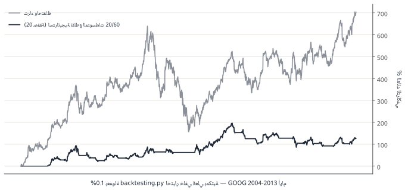
الشكل 19.2 — نتيجة التشغيل الفعلي: +127% في 20 صفقة (نسبة ربح 50%) مقابل +340% للشراء والاحتفاظ، وبتراجع أقصى −38% وشارب 0.44
القراءة الصادقة المعتادة: الاستراتيجية ربحت اسميًا وخسرت المقارنة — GOOG في عقد صعودها الخارق كان يكافئ من لا يغادر. لكن هذا الفصل عن البنية: املك أولًا آلة قياس موثوقة تُخرج هذه الأرقام كلها (عائد، تراجع، شارب، عدد صفقات) لأي استراتيجية في ثوانٍ — ثم حسّن ما تضعه بداخلها بأدوات الأجزاء السابقة.
قفز أي درجة من هذا السلّم هو المقامرة بعينها — مهما كانت الأرقام الخلفية فاتنة.
شغّل اختبار SmaCross الخلفي أعلاه ثم عدّل المعايير إلى 10/30 و50/150: قارن الجداول الثلاثة (عائد، تراجع، عدد صفقات، شارب). أيها «الأفضل»؟ ثم اسأل سؤال الفصل 21 مبكرًا: هل اخترتَ للتو معايير بالنظر إلى نفس البيانات التي ستقيس عليها؟
في أغسطس 2012، شركة Knight Capital — أحد أكبر صناع السوق الأمريكيين — نشرت تحديث كود على خوادمها عدا خادمًا واحدًا بقي يحمل كودًا قديمًا أُعيد تفعيله سهوًا. النتيجة: 45 دقيقة من أوامر شراء وبيع جنونية، خسارة ~440 مليون دولار، ونهاية الشركة عمليًا (بيعت مضطرة). لم يفشل نموذج — فشلت البنية: لا فصل نشر آمن، لا مفتاح إيقاف يعمل فورًا، لا حد خسارة كليًا يجمّد النظام آليًا. كل طبقة «مملة» في هذا الفصل هي درس مدفوع الثمن من قصة كهذه — الروبوت بلا مفتاح إيقاف مُختبَر ليس نظام تداول بل رهان مفتوح السقف.
الشكل 19.2 وأرقامه كلها (127%، 20 صفقة، 50%، −38%، شارب 0.44) مخرجات تشغيل فعلي لمكتبة backtesting.py على بيانات GOOG الحقيقية في scripts/experiments_part7_8.py — نفس المكتبة المجانية التي ستبني بها اختباراتك.
روبوت على حاسوب شخصي يتوقف مع كل إغلاق غطاء أو انقطاع كهرباء — والسوق لا ينتظر. البنية القياسية:
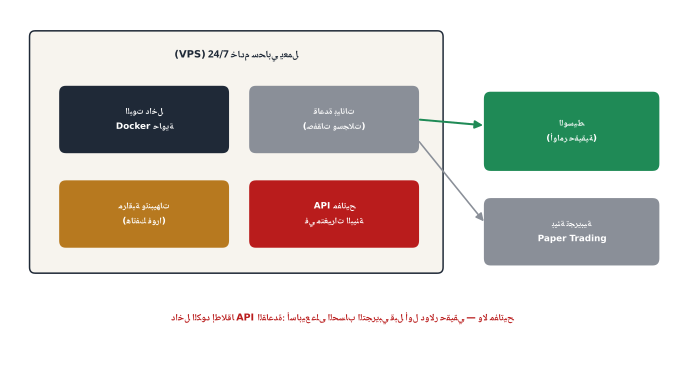
الشكل 20.1 — بنية النشر: خادم سحابي 24/7 يحوي البوت في حاوية Docker مع قاعدة بيانات ومراقبة وتنبيهات، متصلًا بالوسيط — وبجانبه بيئة التداول الورقي التجريبية
import os
from broker_api import Client # واجهة وسيطك (Alpaca, IBKR, Binance...)
client = Client(
api_key=os.environ["BROKER_KEY"], # من متغيرات البيئة حصرا
api_secret=os.environ["BROKER_SECRET"],
paper=True, # ورقي حتى إشعار آخر — التبديل قرار واع
)
order = client.submit_order(symbol="GOOG", qty=10,
side="buy", type="limit", limit_price=142.50)
أعدنا تشغيل استراتيجية الفصل 19 نفسها على نفس البيانات، مغيّرين العمولة فقط:
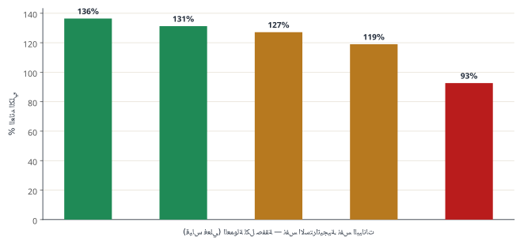
الشكل 20.2 — القياس الفعلي: من +136% بلا تكاليف إلى +93% بعمولة 0.5% — ثلث الأرباح تبخر بمعامل واحد «هامشي»، في استراتيجية لا تتداول إلا 20 مرة!
استراتيجيتنا البطيئة (20 صفقة في 9 سنوات) فقدت ثلث أرباحها؛ استراتيجية لحظية بمئات الصفقات شهريًا تُباد بهذه الأرقام. ولذلك قاعدة الانحراف: قِس الفرق بين سعر إشارتك وسعر تنفيذك الفعلي (الانزلاق) أسبوعيًا — اتساعه المفاجئ أول نُذر تدهور السيولة أو بطء بنيتك.
وثيقة مكتوبة قبل الحاجة إليها، تجيب سلفًا عن كل «ماذا لو» — لأن القرارات تحت الضغط بائسة بانتظام:
| الحدث | الإجراء المكتوب سلفًا |
|---|---|
| انقطاع اتصال بالوسيط > دقيقة | محاولات إعادة تدريجية ← فشل 5 دقائق = تنبيه + تجميد أوامر جديدة |
| خسارة يومية تبلغ الحد | تسطيح كل المراكز آليًا + إيقاف حتى مراجعة يدوية |
| انحراف حي/خلفي > عتبة محددة | خفض الحجم للنصف + تشخيص خلال 48 ساعة |
| خبر كارثي مفاجئ (حرب، انهيار) | مفتاح الإيقاف اليدوي — وقد تدرّبت على ضغطه فعلًا |
| تحديث كود جديد | نشر على الورقي أولًا أسبوعًا كاملًا مهما بدا التغيير تافهًا |
اكتب دفتر تشغيل من صفحة واحدة لروبوت افتراضي يتداول GOOG: خمسة أحداث على الأقل بإجراءاتها المحددة (بأرقام: كم دقيقة؟ كم نسبة؟). ثم اختبر صلابته: اعرضه على صديق ليسألك «وماذا لو حدث X أثناء Y؟» — كل سؤال يُحرجك هو فجوة تُسد الآن لا أثناء الحادث.
متداول شغّل روبوتًا ناجحًا ورقيًا لثلاثة أشهر، فانتقل للحقيقي بحماس — دون ضبط التنبيهات («أسبوع أول هادئ، أضبطها لاحقًا»). في ليلة صيانة لدى الوسيط، عاد الاتصال بحالة مصادقة فاسدة: البوت ظل «يعمل» ويُصدر أوامر تُرفض صامتة، بينما مركز مفتوح بلا وقف خسارة فعلي ينزف مع فجوة هبوط صباحية. الخسارة — التي كانت ستساوي تنبيه رسالة واحدة — بلغت أرباح الشهور الورقية الثلاثة مضاعفة. المفارقة التعليمية: كود التداول لم يكن فيه خطأ واحد؛ الفشل كله في طبقة التشغيل «المملة» التي أجّلها. في الأنظمة الحية، التشغيل ليس ما يأتي بعد البناء — إنه نصف البناء.
الشكل 20.2 قياس فعلي بإعادة تشغيل اختبار الفصل 19 الخلفي خمس مرات بعمولات متدرجة على بيانات GOOG الحقيقية (scripts/experiments_part7_8.py) — جرّب عمولات وسيطك أنت وأعد الحساب قبل أي قرار تشغيل.
النموذج لقطة من سوقٍ مضى، والسوق يتغير — فيشيخ النموذج وهو «يعمل» بلا أي رسالة خطأ. قسنا الظاهرة فعليًا: نموذج لوجستي دُرّب على أول 750 يومًا من GOOG (2004-2007) ثم تُرك يتنبأ دون أي إعادة تدريب، مع دقة متحركة بنافذة 126 يومًا:
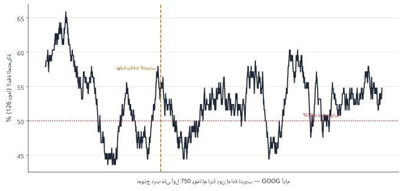
الشكل 21.1 — الانجراف المقيس: بعد نهاية التدريب تتأرجح الدقة حول 52.8% ثم تغوص في فترات (أدنى نافذة: 44.4% — أسوأ من عملة عادلة) مع تحولات نظام السوق التي لم يرها النموذج
نافذة الـ44% ليست «حظًا سيئًا» — إنها النموذج يطبق بثقة قواعد عالمٍ انتهى. العلاج المنهجي ثلاثي: مراقبة دقة متحركة بعتبة إنذار مكتوبة، إعادة تدريب دورية بنافذة منزلقة، ومفتاح أمان الشذوذ من الفصل 7 (يوم لا يشبه التدريب = حجم أقل أو امتناع).
أخطر خطأ في التداول الكمي لا يبدو خطأً إطلاقًا — بل يبدو «بحثًا مجتهدًا». جرّبنا 60 توليفة معايير لاستراتيجية تقاطع متوسطات على النصف الأول من بيانات GOOG، اخترنا «الأفضل»، ثم — ولمرة واحدة — فتحنا النصف الثاني:
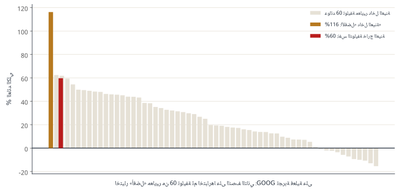
الشكل 21.2 — تجربة التلصص الفعلية: «أفضل» توليفة (9/43) حققت +116% داخل العينة... و+60% فقط خارجها — بالكاد فوق وسيط كل التوليفات (+59%). أفضليتها كانت صدفة منتقاة، لا مهارة
اقرأ الرقمين الأخيرين مجددًا: التوليفة «البطلة» خارج العينة لم تتفوق على توليفة عشوائية وسطية. نصف الأفضلية الظاهرة (56 نقطة مئوية) كانت وهم انتقاء خالصًا. وهذا من 60 تجربة فقط — الباحث النشيط يجرب الآلاف، ومع كل تجربة إضافية يتضخم الوهم. القواعد الدفاعية: عدّاد تجارب صريح، عينة اختبار تُفتح مرة واحدة (عقيدة الفصل 8)، والارتياب المسبق في أي نتيجة وُلدت من بحث طويل — بما فيها نتائجك أنت.
الذكاء الاصطناعي في التداول مضخّم انضباط: يمتاز في تنفيذ منهج مختبر بلا كلل ولا خوف ولا طمع، وفي معالجة أبعاد من البيانات تفوق طاقة البشر. لكنه لا يعرف الغد، ولا يفهم عالمًا تغيّر لتوه، ويرث بأمانة كل عيوب بياناته وتحيزات مصممه. الأنظمة التي تعيش طويلًا تُبنى على هذا التواضع: نماذج بسيطة مفهومة، حدود صلبة خارجية، مراقبة دائمة، وافتراض راسخ أن كل نموذج سيخطئ يومًا بطريقة لم يتوقعها أحد.
أعد تجربة القسم 21.2 بـ200 توليفة بدل 60 (عدّل معامل الحلقة في السكربت): كم تصير فجوة «الأفضل» بين داخل العينة وخارجها؟ ارسم العلاقة: عدد التجارب مقابل حجم الوهم — ثم علّقها فوق شاشتك.
في أغسطس 2007، خلال أيام قليلة، تكبدت كبرى الصناديق الكمية العالمية خسائر متزامنة مدمرة فيما عُرف بـ«Quant Quake» — دون أي خبر اقتصادي يذكر. التشريح اللاحق: عقد من تعلم الجميع أنماطًا متشابهة من بيانات متشابهة أنتج محافظ متطابقة سرًا؛ فلما اضطر أحد الكبار للتسييل، ضغط بيعُه على مراكز الجميع، فتوالت التسييلات في دوامة سحق متبادل. لم يفشل نموذج واحد — فشل افتراض الاستقلالية ذاته: كانت النماذج «المستقلة» نسخًا من عقل جماعي واحد. الدرس البنيوي: ميزة النموذج ليست ذكاءه المطلق بل اختلافه عمن حولك، وسؤال «من يقف على نفس مركزي؟» جزء من إدارة المخاطر.
الشكلان 21.1 و21.2 تجربتان فعليتان كاملتان على بيانات GOOG الحقيقية في scripts/experiments_part7_8.py — أرقام الانجراف (52.8%، 44.4%) والتلصص (116%/60%/59%) قابلة لإعادة الإنتاج حرفيًا بالبذور المثبتة.
لأن الأتمتة مضاعِف قوة بلا ضمير مدمج: الخطأ الذي كان يكلف المتداول اليدوي صفقة، يكلف صاحب الروبوت حسابًا؛ والتجاوز الذي كان يتطلب نية، صار يقع سهوًا بسطر كود. من يبني أنظمة ذكية تلمس المال الحقيقي يحتاج إطارًا مكتوبًا للمسؤولية — لا شعورًا عامًا بحسن النية:
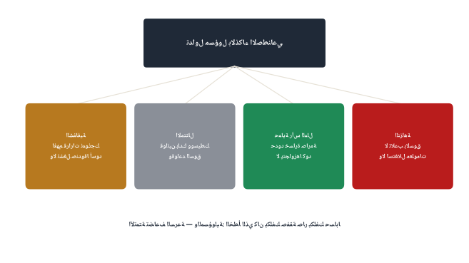
الشكل 22.1 — الأركان الأربعة: الشفافية (افهم قرارات نظامك)، الامتثال (قوانين بلدك وسوقك)، حماية رأس المال (حدود لا يتجاوزها كود)، والنزاهة (لا تلاعب ولا استغلال)
هذه ممارسات غير قانونية في الأسواق المنظمة، والأنظمة الآلية قادرة على ارتكابها سهوًا إن صُممت بإهمال:
قاعدة الفحص الذاتي لأي استراتيجية: «هل تربح من توقّع سلوك السوق، أم من خداع مشاركيه أو أسبقية غير مشروعة عليهم؟» — الأولى تداول، والثانية جريمة بغض النظر عن أناقة الكود.
رحلة اثنين وعشرين فصلًا تختصر في ثلاث حقائق:
الأولى: الذكاء الاصطناعي أداة قوة حقيقية — رأيناه يكشف أنظمة السوق آليًا (ف7)، يقرأ الأخبار بمقاييس مستحيلة بشريًا (ج5)، وينفذ بانضباط لا يعرف الخوف (ج7).
الثانية: ليس صندوق كنز — قسنا بأيدينا: التنبؤ الخام بالغد شبه مستحيل (ف5-6، 12)، النماذج تشيخ (ف21)، والوهم الإحصائي يتنكر في زي المهارة (ف21). من وعدك بغير ذلك يبيعك شيئًا.
الثالثة: الفارق الحقيقي ليس النموذج بل المنهج: تقسيم زمني صارم، خطوط أساس متواضعة، تكاليف من اليوم الأول، اختبار يُفتح مرة، حدود خارجية صلبة، وأمانة كاملة مع الذات في قراءة النتائج. هذا المنهج — لا أي خوارزمية — هو ما يفصل المتداول الكمي عن المقامر المتقني.
وكما في «التحليل الثلاثي»: الأداة تخدم الرؤية، والرؤية تحتاج عقلًا صاحيًا يعرف متى يثق بأدواته — ومتى يطفئها.
اكتب «ميثاق التشغيل» الشخصي لأنظمتك في صفحة: حدود الخسارة المطلقة، قائمة ما لا يُؤتمت أبدًا، معايير إيقاف نظام متدهور، وقواعد عرض نتائجك على الآخرين. وقّعه وأرّخه — ثم اجعله شرط تشغيل أي نظام جديد.
عام 2015 أُدين متداول بريطاني عن مساهمته في «الانهيار الومضي» لعام 2010 عبر خوارزمية Spoofing وضعت أوامر بيع ضخمة زائفة قرب السوق ثم ألغتها آلاف المرات. دفاعه أن «الجميع يلغي أوامر» لم يصمد: النمط الآلي المنهجي (نسبة إلغاء شاذة، توقيت متزامن مع صفقات معاكسة) أدانه من سجلات السوق نفسها. الدرسان الختاميان: (1) المنظمون يحللون البيانات بنفس أدوات هذا الكتاب — أنماطك الآلية بصمة لا تُمحى، (2) الخط بين «استراتيجية ذكية» و«تلاعب» ليس التقنية بل القصد والأثر — والسجلات تشهد بهما معًا. ابنِ أنظمة تفخر بأن تُقرأ سجلاتها كاملة في محكمة.
هذا الفصل معياري بطبيعته؛ عُدَّته التطبيقية هي سجلات الفصل 19 وحدود الفصل 20 مطبقة على أنظمتك — وكل أدوات القياس في هذا الكتاب صالحة لمراجعة امتثالك كما تراجع أرباحك.
يُعد هذا الكتاب، الذكاء الاصطناعي في التداول، بنصّه وهيكله وجميع ما يتضمنه من رسوم وأشكال توضيحية أصلية، ملكية فكرية لمؤلفَيه، Ahmed Abdelhafez وAhmed Abu Omran، ويخضع لحماية قوانين حقوق النشر المحلية والدولية.
يُمنع منعًا باتًا القيام بأي من الإجراءات التالية دون إذن كتابي مسبق من المؤلفَين:
تبقى جميع الحقوق غير الممنوحة صراحةً هنا محفوظة للمؤلفَين. أي انتهاك لهذه الشروط قد يُعرّض المخالف للمساءلة المدنية والجنائية وفق قوانين حقوق النشر المعمول بها، ويحتفظ المؤلفان بحقهما في اتخاذ كل الإجراءات القانونية المتاحة ضد أي فرد أو جهة يثبت انتهاكها لهذا التنبيه.
للاستفسار عن التصاريح أو التراخيص أو الاستخدام المصرح به لأي مادة من هذا الكتاب، يُرجى التواصل مع المؤلفَين مباشرة.
© 2026 Ahmed Abdelhafez وAhmed Abu Omran. جميع الحقوق محفوظة.